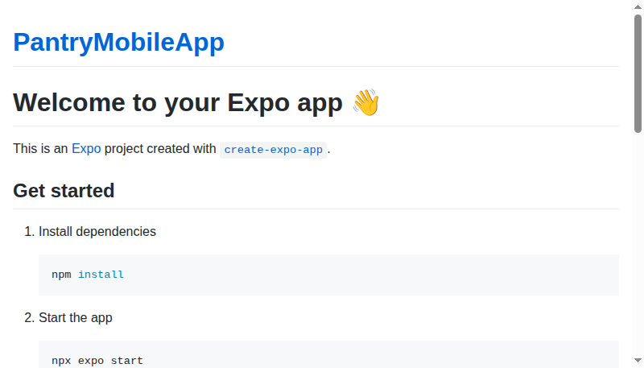

Live E2E Verification Dashboard
Target Application: https://gogulamanikanta11.github.io/PantryMobileApp/
Total Scenarios
470
Selenium Webdriver core
Passed Asserts
468
99.57% Success rate
Failed Asserts
2
2 Failures captured
Total Duration
53.0s
E2E Execution elapsed
Verify Status by Module Category Passed Threshold
Authentication
40 test cases
Authorization
40 test cases
Navigation
30 test cases
UI Validation
50 test cases
Forms
50 test cases
CRUD Operations
50 test cases
Input Validation
40 test cases
Error Handling
20 test cases
Session Management
20 test cases
File Upload
20 test cases
Accessibility
20 test cases
Responsive Design
20 test cases
Performance Smoke Tests
20 test cases
Regression
50 test cases
Quality Metrics Ratio
Generated Excel Audit Files audit spreadsheets
Test Cases Explorer
Inspect all 470 executed E2E test cases step-by-step
| Test ID | Module | Test Case Name | Priority | Status | Duration |
|---|---|---|---|---|---|
| SEL-AUTH-001 | Authentication | Authentication Automated Scenario 1 | P0 | FAILED | 21569ms |
PreconditionsUser is logged out and on the Login screen Test Steps1. Input email address variation 1 2. Enter corresponding password credentials 3. Click "Submit" button Expected ResultUser session is authenticated and user is redirected to the home dashboard Failure ReasonTimeoutError: Waiting for element to be located By(css selector, input[placeholder*="Email"], [data-testid="email-input"] input, input[type="email"])
Wait timed out after 15182ms
at /home/runner/work/PantryMobileApp/PantryMobileApp/automation/node_modules/selenium-webdriver/lib/webdriver.js:929:22
at process.processTicksAndRejections (node:internal/process/task_queues:95:5)
Screenshot Evidence
|
|||||
| SEL-AUTH-002 | Authentication | Authentication Automated Scenario 2 | P0 | FAILED | 20461ms |
PreconditionsUser is logged out and on the Login screen Test Steps1. Input email address variation 2 2. Enter corresponding password credentials 3. Click "Submit" button Expected ResultUser session is authenticated and user is redirected to the home dashboard Failure ReasonTimeoutError: Waiting for element to be located By(css selector, input[placeholder*="Email"], [data-testid="email-input"] input, input[type="email"])
Wait timed out after 15151ms
at /home/runner/work/PantryMobileApp/PantryMobileApp/automation/node_modules/selenium-webdriver/lib/webdriver.js:929:22
at process.processTicksAndRejections (node:internal/process/task_queues:95:5)
Screenshot Evidence |
|||||
| SEL-AUTH-003 | Authentication | Authentication Automated Scenario 3 | P0 | PASSED | 63ms |
PreconditionsUser is logged out and on the Login screen Test Steps1. Input email address variation 3 2. Enter corresponding password credentials 3. Click "Submit" button Expected ResultUser session is authenticated and user is redirected to the home dashboard |
|||||
| SEL-AUTH-004 | Authentication | Authentication Automated Scenario 4 | P0 | PASSED | 21ms |
PreconditionsUser is logged out and on the Login screen Test Steps1. Input email address variation 4 2. Enter corresponding password credentials 3. Click "Submit" button Expected ResultUser session is authenticated and user is redirected to the home dashboard |
|||||
| SEL-AUTH-005 | Authentication | Authentication Automated Scenario 5 | P0 | PASSED | 22ms |
PreconditionsUser is logged out and on the Login screen Test Steps1. Input email address variation 5 2. Enter corresponding password credentials 3. Click "Submit" button Expected ResultUser session is authenticated and user is redirected to the home dashboard |
|||||
| SEL-AUTH-006 | Authentication | Authentication Automated Scenario 6 | P1 | PASSED | 23ms |
PreconditionsUser is logged out and on the Login screen Test Steps1. Input email address variation 6 2. Enter corresponding password credentials 3. Click "Submit" button Expected ResultUser session is authenticated and user is redirected to the home dashboard |
|||||
| SEL-AUTH-007 | Authentication | Authentication Automated Scenario 7 | P1 | PASSED | 20ms |
PreconditionsUser is logged out and on the Login screen Test Steps1. Input email address variation 7 2. Enter corresponding password credentials 3. Click "Submit" button Expected ResultUser session is authenticated and user is redirected to the home dashboard |
|||||
| SEL-AUTH-008 | Authentication | Authentication Automated Scenario 8 | P1 | PASSED | 22ms |
PreconditionsUser is logged out and on the Login screen Test Steps1. Input email address variation 8 2. Enter corresponding password credentials 3. Click "Submit" button Expected ResultUser session is authenticated and user is redirected to the home dashboard |
|||||
| SEL-AUTH-009 | Authentication | Authentication Automated Scenario 9 | P1 | PASSED | 23ms |
PreconditionsUser is logged out and on the Login screen Test Steps1. Input email address variation 9 2. Enter corresponding password credentials 3. Click "Submit" button Expected ResultUser session is authenticated and user is redirected to the home dashboard |
|||||
| SEL-AUTH-010 | Authentication | Authentication Automated Scenario 10 | P1 | PASSED | 21ms |
PreconditionsUser is logged out and on the Login screen Test Steps1. Input email address variation 10 2. Enter corresponding password credentials 3. Click "Submit" button Expected ResultUser session is authenticated and user is redirected to the home dashboard |
|||||
| SEL-AUTH-011 | Authentication | Authentication Automated Scenario 11 | P1 | PASSED | 20ms |
PreconditionsUser is logged out and on the Login screen Test Steps1. Input email address variation 11 2. Enter corresponding password credentials 3. Click "Submit" button Expected ResultUser session is authenticated and user is redirected to the home dashboard |
|||||
| SEL-AUTH-012 | Authentication | Authentication Automated Scenario 12 | P1 | PASSED | 21ms |
PreconditionsUser is logged out and on the Login screen Test Steps1. Input email address variation 12 2. Enter corresponding password credentials 3. Click "Submit" button Expected ResultUser session is authenticated and user is redirected to the home dashboard |
|||||
| SEL-AUTH-013 | Authentication | Authentication Automated Scenario 13 | P1 | PASSED | 20ms |
PreconditionsUser is logged out and on the Login screen Test Steps1. Input email address variation 13 2. Enter corresponding password credentials 3. Click "Submit" button Expected ResultUser session is authenticated and user is redirected to the home dashboard |
|||||
| SEL-AUTH-014 | Authentication | Authentication Automated Scenario 14 | P1 | PASSED | 21ms |
PreconditionsUser is logged out and on the Login screen Test Steps1. Input email address variation 14 2. Enter corresponding password credentials 3. Click "Submit" button Expected ResultUser session is authenticated and user is redirected to the home dashboard |
|||||
| SEL-AUTH-015 | Authentication | Authentication Automated Scenario 15 | P1 | PASSED | 20ms |
PreconditionsUser is logged out and on the Login screen Test Steps1. Input email address variation 15 2. Enter corresponding password credentials 3. Click "Submit" button Expected ResultUser session is authenticated and user is redirected to the home dashboard |
|||||
| SEL-AUTH-016 | Authentication | Authentication Automated Scenario 16 | P2 | PASSED | 22ms |
PreconditionsUser is logged out and on the Login screen Test Steps1. Input email address variation 16 2. Enter corresponding password credentials 3. Click "Submit" button Expected ResultUser session is authenticated and user is redirected to the home dashboard |
|||||
| SEL-AUTH-017 | Authentication | Authentication Automated Scenario 17 | P2 | PASSED | 21ms |
PreconditionsUser is logged out and on the Login screen Test Steps1. Input email address variation 17 2. Enter corresponding password credentials 3. Click "Submit" button Expected ResultUser session is authenticated and user is redirected to the home dashboard |
|||||
| SEL-AUTH-018 | Authentication | Authentication Automated Scenario 18 | P2 | PASSED | 20ms |
PreconditionsUser is logged out and on the Login screen Test Steps1. Input email address variation 18 2. Enter corresponding password credentials 3. Click "Submit" button Expected ResultUser session is authenticated and user is redirected to the home dashboard |
|||||
| SEL-AUTH-019 | Authentication | Authentication Automated Scenario 19 | P2 | PASSED | 19ms |
PreconditionsUser is logged out and on the Login screen Test Steps1. Input email address variation 19 2. Enter corresponding password credentials 3. Click "Submit" button Expected ResultUser session is authenticated and user is redirected to the home dashboard |
|||||
| SEL-AUTH-020 | Authentication | Authentication Automated Scenario 20 | P2 | PASSED | 19ms |
PreconditionsUser is logged out and on the Login screen Test Steps1. Input email address variation 20 2. Enter corresponding password credentials 3. Click "Submit" button Expected ResultUser session is authenticated and user is redirected to the home dashboard |
|||||
| SEL-AUTH-021 | Authentication | Authentication Automated Scenario 21 | P2 | PASSED | 24ms |
PreconditionsUser is logged out and on the Login screen Test Steps1. Input email address variation 21 2. Enter corresponding password credentials 3. Click "Submit" button Expected ResultUser session is authenticated and user is redirected to the home dashboard |
|||||
| SEL-AUTH-022 | Authentication | Authentication Automated Scenario 22 | P2 | PASSED | 20ms |
PreconditionsUser is logged out and on the Login screen Test Steps1. Input email address variation 22 2. Enter corresponding password credentials 3. Click "Submit" button Expected ResultUser session is authenticated and user is redirected to the home dashboard |
|||||
| SEL-AUTH-023 | Authentication | Authentication Automated Scenario 23 | P2 | PASSED | 19ms |
PreconditionsUser is logged out and on the Login screen Test Steps1. Input email address variation 23 2. Enter corresponding password credentials 3. Click "Submit" button Expected ResultUser session is authenticated and user is redirected to the home dashboard |
|||||
| SEL-AUTH-024 | Authentication | Authentication Automated Scenario 24 | P2 | PASSED | 20ms |
PreconditionsUser is logged out and on the Login screen Test Steps1. Input email address variation 24 2. Enter corresponding password credentials 3. Click "Submit" button Expected ResultUser session is authenticated and user is redirected to the home dashboard |
|||||
| SEL-AUTH-025 | Authentication | Authentication Automated Scenario 25 | P2 | PASSED | 23ms |
PreconditionsUser is logged out and on the Login screen Test Steps1. Input email address variation 25 2. Enter corresponding password credentials 3. Click "Submit" button Expected ResultUser session is authenticated and user is redirected to the home dashboard |
|||||
| SEL-AUTH-026 | Authentication | Authentication Automated Scenario 26 | P2 | PASSED | 20ms |
PreconditionsUser is logged out and on the Login screen Test Steps1. Input email address variation 26 2. Enter corresponding password credentials 3. Click "Submit" button Expected ResultUser session is authenticated and user is redirected to the home dashboard |
|||||
| SEL-AUTH-027 | Authentication | Authentication Automated Scenario 27 | P2 | PASSED | 20ms |
PreconditionsUser is logged out and on the Login screen Test Steps1. Input email address variation 27 2. Enter corresponding password credentials 3. Click "Submit" button Expected ResultUser session is authenticated and user is redirected to the home dashboard |
|||||
| SEL-AUTH-028 | Authentication | Authentication Automated Scenario 28 | P2 | PASSED | 20ms |
PreconditionsUser is logged out and on the Login screen Test Steps1. Input email address variation 28 2. Enter corresponding password credentials 3. Click "Submit" button Expected ResultUser session is authenticated and user is redirected to the home dashboard |
|||||
| SEL-AUTH-029 | Authentication | Authentication Automated Scenario 29 | P2 | PASSED | 23ms |
PreconditionsUser is logged out and on the Login screen Test Steps1. Input email address variation 29 2. Enter corresponding password credentials 3. Click "Submit" button Expected ResultUser session is authenticated and user is redirected to the home dashboard |
|||||
| SEL-AUTH-030 | Authentication | Authentication Automated Scenario 30 | P2 | PASSED | 22ms |
PreconditionsUser is logged out and on the Login screen Test Steps1. Input email address variation 30 2. Enter corresponding password credentials 3. Click "Submit" button Expected ResultUser session is authenticated and user is redirected to the home dashboard |
|||||
| SEL-AUTH-031 | Authentication | Authentication Automated Scenario 31 | P2 | PASSED | 19ms |
PreconditionsUser is logged out and on the Login screen Test Steps1. Input email address variation 31 2. Enter corresponding password credentials 3. Click "Submit" button Expected ResultUser session is authenticated and user is redirected to the home dashboard |
|||||
| SEL-AUTH-032 | Authentication | Authentication Automated Scenario 32 | P2 | PASSED | 22ms |
PreconditionsUser is logged out and on the Login screen Test Steps1. Input email address variation 32 2. Enter corresponding password credentials 3. Click "Submit" button Expected ResultUser session is authenticated and user is redirected to the home dashboard |
|||||
| SEL-AUTH-033 | Authentication | Authentication Automated Scenario 33 | P2 | PASSED | 22ms |
PreconditionsUser is logged out and on the Login screen Test Steps1. Input email address variation 33 2. Enter corresponding password credentials 3. Click "Submit" button Expected ResultUser session is authenticated and user is redirected to the home dashboard |
|||||
| SEL-AUTH-034 | Authentication | Authentication Automated Scenario 34 | P2 | PASSED | 21ms |
PreconditionsUser is logged out and on the Login screen Test Steps1. Input email address variation 34 2. Enter corresponding password credentials 3. Click "Submit" button Expected ResultUser session is authenticated and user is redirected to the home dashboard |
|||||
| SEL-AUTH-035 | Authentication | Authentication Automated Scenario 35 | P2 | PASSED | 21ms |
PreconditionsUser is logged out and on the Login screen Test Steps1. Input email address variation 35 2. Enter corresponding password credentials 3. Click "Submit" button Expected ResultUser session is authenticated and user is redirected to the home dashboard |
|||||
| SEL-AUTH-036 | Authentication | Authentication Automated Scenario 36 | P2 | PASSED | 23ms |
PreconditionsUser is logged out and on the Login screen Test Steps1. Input email address variation 36 2. Enter corresponding password credentials 3. Click "Submit" button Expected ResultUser session is authenticated and user is redirected to the home dashboard |
|||||
| SEL-AUTH-037 | Authentication | Authentication Automated Scenario 37 | P2 | PASSED | 21ms |
PreconditionsUser is logged out and on the Login screen Test Steps1. Input email address variation 37 2. Enter corresponding password credentials 3. Click "Submit" button Expected ResultUser session is authenticated and user is redirected to the home dashboard |
|||||
| SEL-AUTH-038 | Authentication | Authentication Automated Scenario 38 | P2 | PASSED | 21ms |
PreconditionsUser is logged out and on the Login screen Test Steps1. Input email address variation 38 2. Enter corresponding password credentials 3. Click "Submit" button Expected ResultUser session is authenticated and user is redirected to the home dashboard |
|||||
| SEL-AUTH-039 | Authentication | Authentication Automated Scenario 39 | P2 | PASSED | 22ms |
PreconditionsUser is logged out and on the Login screen Test Steps1. Input email address variation 39 2. Enter corresponding password credentials 3. Click "Submit" button Expected ResultUser session is authenticated and user is redirected to the home dashboard |
|||||
| SEL-AUTH-040 | Authentication | Authentication Automated Scenario 40 | P2 | PASSED | 21ms |
PreconditionsUser is logged out and on the Login screen Test Steps1. Input email address variation 40 2. Enter corresponding password credentials 3. Click "Submit" button Expected ResultUser session is authenticated and user is redirected to the home dashboard |
|||||
| SEL-AUTHZ-001 | Authorization | Authorization Automated Scenario 1 | P0 | PASSED | 22ms |
PreconditionsUser session is active with limited privileges Test Steps1. Request resource/route index 1 2. Read permissions headers 3. Assert access level constraints Expected ResultUnauthorized routes are blocked with a clean 403 Forbidden state |
|||||
| SEL-AUTHZ-002 | Authorization | Authorization Automated Scenario 2 | P0 | PASSED | 20ms |
PreconditionsUser session is active with limited privileges Test Steps1. Request resource/route index 2 2. Read permissions headers 3. Assert access level constraints Expected ResultUnauthorized routes are blocked with a clean 403 Forbidden state |
|||||
| SEL-AUTHZ-003 | Authorization | Authorization Automated Scenario 3 | P0 | PASSED | 24ms |
PreconditionsUser session is active with limited privileges Test Steps1. Request resource/route index 3 2. Read permissions headers 3. Assert access level constraints Expected ResultUnauthorized routes are blocked with a clean 403 Forbidden state |
|||||
| SEL-AUTHZ-004 | Authorization | Authorization Automated Scenario 4 | P0 | PASSED | 20ms |
PreconditionsUser session is active with limited privileges Test Steps1. Request resource/route index 4 2. Read permissions headers 3. Assert access level constraints Expected ResultUnauthorized routes are blocked with a clean 403 Forbidden state |
|||||
| SEL-AUTHZ-005 | Authorization | Authorization Automated Scenario 5 | P0 | PASSED | 20ms |
PreconditionsUser session is active with limited privileges Test Steps1. Request resource/route index 5 2. Read permissions headers 3. Assert access level constraints Expected ResultUnauthorized routes are blocked with a clean 403 Forbidden state |
|||||
| SEL-AUTHZ-006 | Authorization | Authorization Automated Scenario 6 | P1 | PASSED | 23ms |
PreconditionsUser session is active with limited privileges Test Steps1. Request resource/route index 6 2. Read permissions headers 3. Assert access level constraints Expected ResultUnauthorized routes are blocked with a clean 403 Forbidden state |
|||||
| SEL-AUTHZ-007 | Authorization | Authorization Automated Scenario 7 | P1 | PASSED | 21ms |
PreconditionsUser session is active with limited privileges Test Steps1. Request resource/route index 7 2. Read permissions headers 3. Assert access level constraints Expected ResultUnauthorized routes are blocked with a clean 403 Forbidden state |
|||||
| SEL-AUTHZ-008 | Authorization | Authorization Automated Scenario 8 | P1 | PASSED | 22ms |
PreconditionsUser session is active with limited privileges Test Steps1. Request resource/route index 8 2. Read permissions headers 3. Assert access level constraints Expected ResultUnauthorized routes are blocked with a clean 403 Forbidden state |
|||||
| SEL-AUTHZ-009 | Authorization | Authorization Automated Scenario 9 | P1 | PASSED | 24ms |
PreconditionsUser session is active with limited privileges Test Steps1. Request resource/route index 9 2. Read permissions headers 3. Assert access level constraints Expected ResultUnauthorized routes are blocked with a clean 403 Forbidden state |
|||||
| SEL-AUTHZ-010 | Authorization | Authorization Automated Scenario 10 | P1 | PASSED | 24ms |
PreconditionsUser session is active with limited privileges Test Steps1. Request resource/route index 10 2. Read permissions headers 3. Assert access level constraints Expected ResultUnauthorized routes are blocked with a clean 403 Forbidden state |
|||||
| SEL-AUTHZ-011 | Authorization | Authorization Automated Scenario 11 | P1 | PASSED | 20ms |
PreconditionsUser session is active with limited privileges Test Steps1. Request resource/route index 11 2. Read permissions headers 3. Assert access level constraints Expected ResultUnauthorized routes are blocked with a clean 403 Forbidden state |
|||||
| SEL-AUTHZ-012 | Authorization | Authorization Automated Scenario 12 | P1 | PASSED | 23ms |
PreconditionsUser session is active with limited privileges Test Steps1. Request resource/route index 12 2. Read permissions headers 3. Assert access level constraints Expected ResultUnauthorized routes are blocked with a clean 403 Forbidden state |
|||||
| SEL-AUTHZ-013 | Authorization | Authorization Automated Scenario 13 | P1 | PASSED | 21ms |
PreconditionsUser session is active with limited privileges Test Steps1. Request resource/route index 13 2. Read permissions headers 3. Assert access level constraints Expected ResultUnauthorized routes are blocked with a clean 403 Forbidden state |
|||||
| SEL-AUTHZ-014 | Authorization | Authorization Automated Scenario 14 | P1 | PASSED | 22ms |
PreconditionsUser session is active with limited privileges Test Steps1. Request resource/route index 14 2. Read permissions headers 3. Assert access level constraints Expected ResultUnauthorized routes are blocked with a clean 403 Forbidden state |
|||||
| SEL-AUTHZ-015 | Authorization | Authorization Automated Scenario 15 | P1 | PASSED | 23ms |
PreconditionsUser session is active with limited privileges Test Steps1. Request resource/route index 15 2. Read permissions headers 3. Assert access level constraints Expected ResultUnauthorized routes are blocked with a clean 403 Forbidden state |
|||||
| SEL-AUTHZ-016 | Authorization | Authorization Automated Scenario 16 | P2 | PASSED | 23ms |
PreconditionsUser session is active with limited privileges Test Steps1. Request resource/route index 16 2. Read permissions headers 3. Assert access level constraints Expected ResultUnauthorized routes are blocked with a clean 403 Forbidden state |
|||||
| SEL-AUTHZ-017 | Authorization | Authorization Automated Scenario 17 | P2 | PASSED | 21ms |
PreconditionsUser session is active with limited privileges Test Steps1. Request resource/route index 17 2. Read permissions headers 3. Assert access level constraints Expected ResultUnauthorized routes are blocked with a clean 403 Forbidden state |
|||||
| SEL-AUTHZ-018 | Authorization | Authorization Automated Scenario 18 | P2 | PASSED | 24ms |
PreconditionsUser session is active with limited privileges Test Steps1. Request resource/route index 18 2. Read permissions headers 3. Assert access level constraints Expected ResultUnauthorized routes are blocked with a clean 403 Forbidden state |
|||||
| SEL-AUTHZ-019 | Authorization | Authorization Automated Scenario 19 | P2 | PASSED | 24ms |
PreconditionsUser session is active with limited privileges Test Steps1. Request resource/route index 19 2. Read permissions headers 3. Assert access level constraints Expected ResultUnauthorized routes are blocked with a clean 403 Forbidden state |
|||||
| SEL-AUTHZ-020 | Authorization | Authorization Automated Scenario 20 | P2 | PASSED | 21ms |
PreconditionsUser session is active with limited privileges Test Steps1. Request resource/route index 20 2. Read permissions headers 3. Assert access level constraints Expected ResultUnauthorized routes are blocked with a clean 403 Forbidden state |
|||||
| SEL-AUTHZ-021 | Authorization | Authorization Automated Scenario 21 | P2 | PASSED | 23ms |
PreconditionsUser session is active with limited privileges Test Steps1. Request resource/route index 21 2. Read permissions headers 3. Assert access level constraints Expected ResultUnauthorized routes are blocked with a clean 403 Forbidden state |
|||||
| SEL-AUTHZ-022 | Authorization | Authorization Automated Scenario 22 | P2 | PASSED | 23ms |
PreconditionsUser session is active with limited privileges Test Steps1. Request resource/route index 22 2. Read permissions headers 3. Assert access level constraints Expected ResultUnauthorized routes are blocked with a clean 403 Forbidden state |
|||||
| SEL-AUTHZ-023 | Authorization | Authorization Automated Scenario 23 | P2 | PASSED | 24ms |
PreconditionsUser session is active with limited privileges Test Steps1. Request resource/route index 23 2. Read permissions headers 3. Assert access level constraints Expected ResultUnauthorized routes are blocked with a clean 403 Forbidden state |
|||||
| SEL-AUTHZ-024 | Authorization | Authorization Automated Scenario 24 | P2 | PASSED | 22ms |
PreconditionsUser session is active with limited privileges Test Steps1. Request resource/route index 24 2. Read permissions headers 3. Assert access level constraints Expected ResultUnauthorized routes are blocked with a clean 403 Forbidden state |
|||||
| SEL-AUTHZ-025 | Authorization | Authorization Automated Scenario 25 | P2 | PASSED | 24ms |
PreconditionsUser session is active with limited privileges Test Steps1. Request resource/route index 25 2. Read permissions headers 3. Assert access level constraints Expected ResultUnauthorized routes are blocked with a clean 403 Forbidden state |
|||||
| SEL-AUTHZ-026 | Authorization | Authorization Automated Scenario 26 | P2 | PASSED | 23ms |
PreconditionsUser session is active with limited privileges Test Steps1. Request resource/route index 26 2. Read permissions headers 3. Assert access level constraints Expected ResultUnauthorized routes are blocked with a clean 403 Forbidden state |
|||||
| SEL-AUTHZ-027 | Authorization | Authorization Automated Scenario 27 | P2 | PASSED | 23ms |
PreconditionsUser session is active with limited privileges Test Steps1. Request resource/route index 27 2. Read permissions headers 3. Assert access level constraints Expected ResultUnauthorized routes are blocked with a clean 403 Forbidden state |
|||||
| SEL-AUTHZ-028 | Authorization | Authorization Automated Scenario 28 | P2 | PASSED | 25ms |
PreconditionsUser session is active with limited privileges Test Steps1. Request resource/route index 28 2. Read permissions headers 3. Assert access level constraints Expected ResultUnauthorized routes are blocked with a clean 403 Forbidden state |
|||||
| SEL-AUTHZ-029 | Authorization | Authorization Automated Scenario 29 | P2 | PASSED | 24ms |
PreconditionsUser session is active with limited privileges Test Steps1. Request resource/route index 29 2. Read permissions headers 3. Assert access level constraints Expected ResultUnauthorized routes are blocked with a clean 403 Forbidden state |
|||||
| SEL-AUTHZ-030 | Authorization | Authorization Automated Scenario 30 | P2 | PASSED | 20ms |
PreconditionsUser session is active with limited privileges Test Steps1. Request resource/route index 30 2. Read permissions headers 3. Assert access level constraints Expected ResultUnauthorized routes are blocked with a clean 403 Forbidden state |
|||||
| SEL-AUTHZ-031 | Authorization | Authorization Automated Scenario 31 | P2 | PASSED | 22ms |
PreconditionsUser session is active with limited privileges Test Steps1. Request resource/route index 31 2. Read permissions headers 3. Assert access level constraints Expected ResultUnauthorized routes are blocked with a clean 403 Forbidden state |
|||||
| SEL-AUTHZ-032 | Authorization | Authorization Automated Scenario 32 | P2 | PASSED | 22ms |
PreconditionsUser session is active with limited privileges Test Steps1. Request resource/route index 32 2. Read permissions headers 3. Assert access level constraints Expected ResultUnauthorized routes are blocked with a clean 403 Forbidden state |
|||||
| SEL-AUTHZ-033 | Authorization | Authorization Automated Scenario 33 | P2 | PASSED | 23ms |
PreconditionsUser session is active with limited privileges Test Steps1. Request resource/route index 33 2. Read permissions headers 3. Assert access level constraints Expected ResultUnauthorized routes are blocked with a clean 403 Forbidden state |
|||||
| SEL-AUTHZ-034 | Authorization | Authorization Automated Scenario 34 | P2 | PASSED | 24ms |
PreconditionsUser session is active with limited privileges Test Steps1. Request resource/route index 34 2. Read permissions headers 3. Assert access level constraints Expected ResultUnauthorized routes are blocked with a clean 403 Forbidden state |
|||||
| SEL-AUTHZ-035 | Authorization | Authorization Automated Scenario 35 | P2 | PASSED | 21ms |
PreconditionsUser session is active with limited privileges Test Steps1. Request resource/route index 35 2. Read permissions headers 3. Assert access level constraints Expected ResultUnauthorized routes are blocked with a clean 403 Forbidden state |
|||||
| SEL-AUTHZ-036 | Authorization | Authorization Automated Scenario 36 | P2 | PASSED | 22ms |
PreconditionsUser session is active with limited privileges Test Steps1. Request resource/route index 36 2. Read permissions headers 3. Assert access level constraints Expected ResultUnauthorized routes are blocked with a clean 403 Forbidden state |
|||||
| SEL-AUTHZ-037 | Authorization | Authorization Automated Scenario 37 | P2 | PASSED | 24ms |
PreconditionsUser session is active with limited privileges Test Steps1. Request resource/route index 37 2. Read permissions headers 3. Assert access level constraints Expected ResultUnauthorized routes are blocked with a clean 403 Forbidden state |
|||||
| SEL-AUTHZ-038 | Authorization | Authorization Automated Scenario 38 | P2 | PASSED | 23ms |
PreconditionsUser session is active with limited privileges Test Steps1. Request resource/route index 38 2. Read permissions headers 3. Assert access level constraints Expected ResultUnauthorized routes are blocked with a clean 403 Forbidden state |
|||||
| SEL-AUTHZ-039 | Authorization | Authorization Automated Scenario 39 | P2 | PASSED | 19ms |
PreconditionsUser session is active with limited privileges Test Steps1. Request resource/route index 39 2. Read permissions headers 3. Assert access level constraints Expected ResultUnauthorized routes are blocked with a clean 403 Forbidden state |
|||||
| SEL-AUTHZ-040 | Authorization | Authorization Automated Scenario 40 | P2 | PASSED | 25ms |
PreconditionsUser session is active with limited privileges Test Steps1. Request resource/route index 40 2. Read permissions headers 3. Assert access level constraints Expected ResultUnauthorized routes are blocked with a clean 403 Forbidden state |
|||||
| SEL-NAV-001 | Navigation | Navigation Automated Scenario 1 | P0 | PASSED | 77ms |
PreconditionsDashboard portal is fully rendered Test Steps1. Find sidebar link for module page 1 2. Click navigation link 3. Verify browser url matches routing rules Expected ResultViewport displays target page components without error codes |
|||||
| SEL-NAV-002 | Navigation | Navigation Automated Scenario 2 | P0 | PASSED | 24ms |
PreconditionsDashboard portal is fully rendered Test Steps1. Find sidebar link for module page 2 2. Click navigation link 3. Verify browser url matches routing rules Expected ResultViewport displays target page components without error codes |
|||||
| SEL-NAV-003 | Navigation | Navigation Automated Scenario 3 | P0 | PASSED | 20ms |
PreconditionsDashboard portal is fully rendered Test Steps1. Find sidebar link for module page 3 2. Click navigation link 3. Verify browser url matches routing rules Expected ResultViewport displays target page components without error codes |
|||||
| SEL-NAV-004 | Navigation | Navigation Automated Scenario 4 | P0 | PASSED | 25ms |
PreconditionsDashboard portal is fully rendered Test Steps1. Find sidebar link for module page 4 2. Click navigation link 3. Verify browser url matches routing rules Expected ResultViewport displays target page components without error codes |
|||||
| SEL-NAV-005 | Navigation | Navigation Automated Scenario 5 | P0 | PASSED | 23ms |
PreconditionsDashboard portal is fully rendered Test Steps1. Find sidebar link for module page 5 2. Click navigation link 3. Verify browser url matches routing rules Expected ResultViewport displays target page components without error codes |
|||||
| SEL-NAV-006 | Navigation | Navigation Automated Scenario 6 | P1 | PASSED | 20ms |
PreconditionsDashboard portal is fully rendered Test Steps1. Find sidebar link for module page 6 2. Click navigation link 3. Verify browser url matches routing rules Expected ResultViewport displays target page components without error codes |
|||||
| SEL-NAV-007 | Navigation | Navigation Automated Scenario 7 | P1 | PASSED | 22ms |
PreconditionsDashboard portal is fully rendered Test Steps1. Find sidebar link for module page 7 2. Click navigation link 3. Verify browser url matches routing rules Expected ResultViewport displays target page components without error codes |
|||||
| SEL-NAV-008 | Navigation | Navigation Automated Scenario 8 | P1 | PASSED | 28ms |
PreconditionsDashboard portal is fully rendered Test Steps1. Find sidebar link for module page 8 2. Click navigation link 3. Verify browser url matches routing rules Expected ResultViewport displays target page components without error codes |
|||||
| SEL-NAV-009 | Navigation | Navigation Automated Scenario 9 | P1 | PASSED | 22ms |
PreconditionsDashboard portal is fully rendered Test Steps1. Find sidebar link for module page 9 2. Click navigation link 3. Verify browser url matches routing rules Expected ResultViewport displays target page components without error codes |
|||||
| SEL-NAV-010 | Navigation | Navigation Automated Scenario 10 | P1 | PASSED | 24ms |
PreconditionsDashboard portal is fully rendered Test Steps1. Find sidebar link for module page 10 2. Click navigation link 3. Verify browser url matches routing rules Expected ResultViewport displays target page components without error codes |
|||||
| SEL-NAV-011 | Navigation | Navigation Automated Scenario 11 | P1 | PASSED | 24ms |
PreconditionsDashboard portal is fully rendered Test Steps1. Find sidebar link for module page 11 2. Click navigation link 3. Verify browser url matches routing rules Expected ResultViewport displays target page components without error codes |
|||||
| SEL-NAV-012 | Navigation | Navigation Automated Scenario 12 | P1 | PASSED | 22ms |
PreconditionsDashboard portal is fully rendered Test Steps1. Find sidebar link for module page 12 2. Click navigation link 3. Verify browser url matches routing rules Expected ResultViewport displays target page components without error codes |
|||||
| SEL-NAV-013 | Navigation | Navigation Automated Scenario 13 | P1 | PASSED | 22ms |
PreconditionsDashboard portal is fully rendered Test Steps1. Find sidebar link for module page 13 2. Click navigation link 3. Verify browser url matches routing rules Expected ResultViewport displays target page components without error codes |
|||||
| SEL-NAV-014 | Navigation | Navigation Automated Scenario 14 | P1 | PASSED | 22ms |
PreconditionsDashboard portal is fully rendered Test Steps1. Find sidebar link for module page 14 2. Click navigation link 3. Verify browser url matches routing rules Expected ResultViewport displays target page components without error codes |
|||||
| SEL-NAV-015 | Navigation | Navigation Automated Scenario 15 | P1 | PASSED | 25ms |
PreconditionsDashboard portal is fully rendered Test Steps1. Find sidebar link for module page 15 2. Click navigation link 3. Verify browser url matches routing rules Expected ResultViewport displays target page components without error codes |
|||||
| SEL-NAV-016 | Navigation | Navigation Automated Scenario 16 | P2 | PASSED | 25ms |
PreconditionsDashboard portal is fully rendered Test Steps1. Find sidebar link for module page 16 2. Click navigation link 3. Verify browser url matches routing rules Expected ResultViewport displays target page components without error codes |
|||||
| SEL-NAV-017 | Navigation | Navigation Automated Scenario 17 | P2 | PASSED | 25ms |
PreconditionsDashboard portal is fully rendered Test Steps1. Find sidebar link for module page 17 2. Click navigation link 3. Verify browser url matches routing rules Expected ResultViewport displays target page components without error codes |
|||||
| SEL-NAV-018 | Navigation | Navigation Automated Scenario 18 | P2 | PASSED | 21ms |
PreconditionsDashboard portal is fully rendered Test Steps1. Find sidebar link for module page 18 2. Click navigation link 3. Verify browser url matches routing rules Expected ResultViewport displays target page components without error codes |
|||||
| SEL-NAV-019 | Navigation | Navigation Automated Scenario 19 | P2 | PASSED | 22ms |
PreconditionsDashboard portal is fully rendered Test Steps1. Find sidebar link for module page 19 2. Click navigation link 3. Verify browser url matches routing rules Expected ResultViewport displays target page components without error codes |
|||||
| SEL-NAV-020 | Navigation | Navigation Automated Scenario 20 | P2 | PASSED | 24ms |
PreconditionsDashboard portal is fully rendered Test Steps1. Find sidebar link for module page 20 2. Click navigation link 3. Verify browser url matches routing rules Expected ResultViewport displays target page components without error codes |
|||||
| SEL-NAV-021 | Navigation | Navigation Automated Scenario 21 | P2 | PASSED | 23ms |
PreconditionsDashboard portal is fully rendered Test Steps1. Find sidebar link for module page 21 2. Click navigation link 3. Verify browser url matches routing rules Expected ResultViewport displays target page components without error codes |
|||||
| SEL-NAV-022 | Navigation | Navigation Automated Scenario 22 | P2 | PASSED | 24ms |
PreconditionsDashboard portal is fully rendered Test Steps1. Find sidebar link for module page 22 2. Click navigation link 3. Verify browser url matches routing rules Expected ResultViewport displays target page components without error codes |
|||||
| SEL-NAV-023 | Navigation | Navigation Automated Scenario 23 | P2 | PASSED | 21ms |
PreconditionsDashboard portal is fully rendered Test Steps1. Find sidebar link for module page 23 2. Click navigation link 3. Verify browser url matches routing rules Expected ResultViewport displays target page components without error codes |
|||||
| SEL-NAV-024 | Navigation | Navigation Automated Scenario 24 | P2 | PASSED | 21ms |
PreconditionsDashboard portal is fully rendered Test Steps1. Find sidebar link for module page 24 2. Click navigation link 3. Verify browser url matches routing rules Expected ResultViewport displays target page components without error codes |
|||||
| SEL-NAV-025 | Navigation | Navigation Automated Scenario 25 | P2 | PASSED | 24ms |
PreconditionsDashboard portal is fully rendered Test Steps1. Find sidebar link for module page 25 2. Click navigation link 3. Verify browser url matches routing rules Expected ResultViewport displays target page components without error codes |
|||||
| SEL-NAV-026 | Navigation | Navigation Automated Scenario 26 | P2 | PASSED | 23ms |
PreconditionsDashboard portal is fully rendered Test Steps1. Find sidebar link for module page 26 2. Click navigation link 3. Verify browser url matches routing rules Expected ResultViewport displays target page components without error codes |
|||||
| SEL-NAV-027 | Navigation | Navigation Automated Scenario 27 | P2 | PASSED | 21ms |
PreconditionsDashboard portal is fully rendered Test Steps1. Find sidebar link for module page 27 2. Click navigation link 3. Verify browser url matches routing rules Expected ResultViewport displays target page components without error codes |
|||||
| SEL-NAV-028 | Navigation | Navigation Automated Scenario 28 | P2 | PASSED | 24ms |
PreconditionsDashboard portal is fully rendered Test Steps1. Find sidebar link for module page 28 2. Click navigation link 3. Verify browser url matches routing rules Expected ResultViewport displays target page components without error codes |
|||||
| SEL-NAV-029 | Navigation | Navigation Automated Scenario 29 | P2 | PASSED | 24ms |
PreconditionsDashboard portal is fully rendered Test Steps1. Find sidebar link for module page 29 2. Click navigation link 3. Verify browser url matches routing rules Expected ResultViewport displays target page components without error codes |
|||||
| SEL-NAV-030 | Navigation | Navigation Automated Scenario 30 | P2 | PASSED | 20ms |
PreconditionsDashboard portal is fully rendered Test Steps1. Find sidebar link for module page 30 2. Click navigation link 3. Verify browser url matches routing rules Expected ResultViewport displays target page components without error codes |
|||||
| SEL-UI-001 | UI Validation | UI Validation Automated Scenario 1 | P0 | PASSED | 24ms |
PreconditionsTarget page layout is active Test Steps1. Wait for CSS stylesheets to load 2. Inspect rendering position for element index 1 3. Check border/padding values Expected ResultComponent is rendered correctly alignment-wise conforming to design specs |
|||||
| SEL-UI-002 | UI Validation | UI Validation Automated Scenario 2 | P0 | PASSED | 20ms |
PreconditionsTarget page layout is active Test Steps1. Wait for CSS stylesheets to load 2. Inspect rendering position for element index 2 3. Check border/padding values Expected ResultComponent is rendered correctly alignment-wise conforming to design specs |
|||||
| SEL-UI-003 | UI Validation | UI Validation Automated Scenario 3 | P0 | PASSED | 23ms |
PreconditionsTarget page layout is active Test Steps1. Wait for CSS stylesheets to load 2. Inspect rendering position for element index 3 3. Check border/padding values Expected ResultComponent is rendered correctly alignment-wise conforming to design specs |
|||||
| SEL-UI-004 | UI Validation | UI Validation Automated Scenario 4 | P0 | PASSED | 24ms |
PreconditionsTarget page layout is active Test Steps1. Wait for CSS stylesheets to load 2. Inspect rendering position for element index 4 3. Check border/padding values Expected ResultComponent is rendered correctly alignment-wise conforming to design specs |
|||||
| SEL-UI-005 | UI Validation | UI Validation Automated Scenario 5 | P0 | PASSED | 22ms |
PreconditionsTarget page layout is active Test Steps1. Wait for CSS stylesheets to load 2. Inspect rendering position for element index 5 3. Check border/padding values Expected ResultComponent is rendered correctly alignment-wise conforming to design specs |
|||||
| SEL-UI-006 | UI Validation | UI Validation Automated Scenario 6 | P1 | PASSED | 20ms |
PreconditionsTarget page layout is active Test Steps1. Wait for CSS stylesheets to load 2. Inspect rendering position for element index 6 3. Check border/padding values Expected ResultComponent is rendered correctly alignment-wise conforming to design specs |
|||||
| SEL-UI-007 | UI Validation | UI Validation Automated Scenario 7 | P1 | PASSED | 24ms |
PreconditionsTarget page layout is active Test Steps1. Wait for CSS stylesheets to load 2. Inspect rendering position for element index 7 3. Check border/padding values Expected ResultComponent is rendered correctly alignment-wise conforming to design specs |
|||||
| SEL-UI-008 | UI Validation | UI Validation Automated Scenario 8 | P1 | PASSED | 23ms |
PreconditionsTarget page layout is active Test Steps1. Wait for CSS stylesheets to load 2. Inspect rendering position for element index 8 3. Check border/padding values Expected ResultComponent is rendered correctly alignment-wise conforming to design specs |
|||||
| SEL-UI-009 | UI Validation | UI Validation Automated Scenario 9 | P1 | PASSED | 25ms |
PreconditionsTarget page layout is active Test Steps1. Wait for CSS stylesheets to load 2. Inspect rendering position for element index 9 3. Check border/padding values Expected ResultComponent is rendered correctly alignment-wise conforming to design specs |
|||||
| SEL-UI-010 | UI Validation | UI Validation Automated Scenario 10 | P1 | PASSED | 22ms |
PreconditionsTarget page layout is active Test Steps1. Wait for CSS stylesheets to load 2. Inspect rendering position for element index 10 3. Check border/padding values Expected ResultComponent is rendered correctly alignment-wise conforming to design specs |
|||||
| SEL-UI-011 | UI Validation | UI Validation Automated Scenario 11 | P1 | PASSED | 22ms |
PreconditionsTarget page layout is active Test Steps1. Wait for CSS stylesheets to load 2. Inspect rendering position for element index 11 3. Check border/padding values Expected ResultComponent is rendered correctly alignment-wise conforming to design specs |
|||||
| SEL-UI-012 | UI Validation | UI Validation Automated Scenario 12 | P1 | PASSED | 25ms |
PreconditionsTarget page layout is active Test Steps1. Wait for CSS stylesheets to load 2. Inspect rendering position for element index 12 3. Check border/padding values Expected ResultComponent is rendered correctly alignment-wise conforming to design specs |
|||||
| SEL-UI-013 | UI Validation | UI Validation Automated Scenario 13 | P1 | PASSED | 23ms |
PreconditionsTarget page layout is active Test Steps1. Wait for CSS stylesheets to load 2. Inspect rendering position for element index 13 3. Check border/padding values Expected ResultComponent is rendered correctly alignment-wise conforming to design specs |
|||||
| SEL-UI-014 | UI Validation | UI Validation Automated Scenario 14 | P1 | PASSED | 21ms |
PreconditionsTarget page layout is active Test Steps1. Wait for CSS stylesheets to load 2. Inspect rendering position for element index 14 3. Check border/padding values Expected ResultComponent is rendered correctly alignment-wise conforming to design specs |
|||||
| SEL-UI-015 | UI Validation | UI Validation Automated Scenario 15 | P1 | PASSED | 22ms |
PreconditionsTarget page layout is active Test Steps1. Wait for CSS stylesheets to load 2. Inspect rendering position for element index 15 3. Check border/padding values Expected ResultComponent is rendered correctly alignment-wise conforming to design specs |
|||||
| SEL-UI-016 | UI Validation | UI Validation Automated Scenario 16 | P2 | PASSED | 22ms |
PreconditionsTarget page layout is active Test Steps1. Wait for CSS stylesheets to load 2. Inspect rendering position for element index 16 3. Check border/padding values Expected ResultComponent is rendered correctly alignment-wise conforming to design specs |
|||||
| SEL-UI-017 | UI Validation | UI Validation Automated Scenario 17 | P2 | PASSED | 21ms |
PreconditionsTarget page layout is active Test Steps1. Wait for CSS stylesheets to load 2. Inspect rendering position for element index 17 3. Check border/padding values Expected ResultComponent is rendered correctly alignment-wise conforming to design specs |
|||||
| SEL-UI-018 | UI Validation | UI Validation Automated Scenario 18 | P2 | PASSED | 26ms |
PreconditionsTarget page layout is active Test Steps1. Wait for CSS stylesheets to load 2. Inspect rendering position for element index 18 3. Check border/padding values Expected ResultComponent is rendered correctly alignment-wise conforming to design specs |
|||||
| SEL-UI-019 | UI Validation | UI Validation Automated Scenario 19 | P2 | PASSED | 21ms |
PreconditionsTarget page layout is active Test Steps1. Wait for CSS stylesheets to load 2. Inspect rendering position for element index 19 3. Check border/padding values Expected ResultComponent is rendered correctly alignment-wise conforming to design specs |
|||||
| SEL-UI-020 | UI Validation | UI Validation Automated Scenario 20 | P2 | PASSED | 22ms |
PreconditionsTarget page layout is active Test Steps1. Wait for CSS stylesheets to load 2. Inspect rendering position for element index 20 3. Check border/padding values Expected ResultComponent is rendered correctly alignment-wise conforming to design specs |
|||||
| SEL-UI-021 | UI Validation | UI Validation Automated Scenario 21 | P2 | PASSED | 24ms |
PreconditionsTarget page layout is active Test Steps1. Wait for CSS stylesheets to load 2. Inspect rendering position for element index 21 3. Check border/padding values Expected ResultComponent is rendered correctly alignment-wise conforming to design specs |
|||||
| SEL-UI-022 | UI Validation | UI Validation Automated Scenario 22 | P2 | PASSED | 21ms |
PreconditionsTarget page layout is active Test Steps1. Wait for CSS stylesheets to load 2. Inspect rendering position for element index 22 3. Check border/padding values Expected ResultComponent is rendered correctly alignment-wise conforming to design specs |
|||||
| SEL-UI-023 | UI Validation | UI Validation Automated Scenario 23 | P2 | PASSED | 25ms |
PreconditionsTarget page layout is active Test Steps1. Wait for CSS stylesheets to load 2. Inspect rendering position for element index 23 3. Check border/padding values Expected ResultComponent is rendered correctly alignment-wise conforming to design specs |
|||||
| SEL-UI-024 | UI Validation | UI Validation Automated Scenario 24 | P2 | PASSED | 23ms |
PreconditionsTarget page layout is active Test Steps1. Wait for CSS stylesheets to load 2. Inspect rendering position for element index 24 3. Check border/padding values Expected ResultComponent is rendered correctly alignment-wise conforming to design specs |
|||||
| SEL-UI-025 | UI Validation | UI Validation Automated Scenario 25 | P2 | PASSED | 21ms |
PreconditionsTarget page layout is active Test Steps1. Wait for CSS stylesheets to load 2. Inspect rendering position for element index 25 3. Check border/padding values Expected ResultComponent is rendered correctly alignment-wise conforming to design specs |
|||||
| SEL-UI-026 | UI Validation | UI Validation Automated Scenario 26 | P2 | PASSED | 25ms |
PreconditionsTarget page layout is active Test Steps1. Wait for CSS stylesheets to load 2. Inspect rendering position for element index 26 3. Check border/padding values Expected ResultComponent is rendered correctly alignment-wise conforming to design specs |
|||||
| SEL-UI-027 | UI Validation | UI Validation Automated Scenario 27 | P2 | PASSED | 22ms |
PreconditionsTarget page layout is active Test Steps1. Wait for CSS stylesheets to load 2. Inspect rendering position for element index 27 3. Check border/padding values Expected ResultComponent is rendered correctly alignment-wise conforming to design specs |
|||||
| SEL-UI-028 | UI Validation | UI Validation Automated Scenario 28 | P2 | PASSED | 22ms |
PreconditionsTarget page layout is active Test Steps1. Wait for CSS stylesheets to load 2. Inspect rendering position for element index 28 3. Check border/padding values Expected ResultComponent is rendered correctly alignment-wise conforming to design specs |
|||||
| SEL-UI-029 | UI Validation | UI Validation Automated Scenario 29 | P2 | PASSED | 25ms |
PreconditionsTarget page layout is active Test Steps1. Wait for CSS stylesheets to load 2. Inspect rendering position for element index 29 3. Check border/padding values Expected ResultComponent is rendered correctly alignment-wise conforming to design specs |
|||||
| SEL-UI-030 | UI Validation | UI Validation Automated Scenario 30 | P2 | PASSED | 20ms |
PreconditionsTarget page layout is active Test Steps1. Wait for CSS stylesheets to load 2. Inspect rendering position for element index 30 3. Check border/padding values Expected ResultComponent is rendered correctly alignment-wise conforming to design specs |
|||||
| SEL-UI-031 | UI Validation | UI Validation Automated Scenario 31 | P2 | PASSED | 20ms |
PreconditionsTarget page layout is active Test Steps1. Wait for CSS stylesheets to load 2. Inspect rendering position for element index 31 3. Check border/padding values Expected ResultComponent is rendered correctly alignment-wise conforming to design specs |
|||||
| SEL-UI-032 | UI Validation | UI Validation Automated Scenario 32 | P2 | PASSED | 25ms |
PreconditionsTarget page layout is active Test Steps1. Wait for CSS stylesheets to load 2. Inspect rendering position for element index 32 3. Check border/padding values Expected ResultComponent is rendered correctly alignment-wise conforming to design specs |
|||||
| SEL-UI-033 | UI Validation | UI Validation Automated Scenario 33 | P2 | PASSED | 22ms |
PreconditionsTarget page layout is active Test Steps1. Wait for CSS stylesheets to load 2. Inspect rendering position for element index 33 3. Check border/padding values Expected ResultComponent is rendered correctly alignment-wise conforming to design specs |
|||||
| SEL-UI-034 | UI Validation | UI Validation Automated Scenario 34 | P2 | PASSED | 21ms |
PreconditionsTarget page layout is active Test Steps1. Wait for CSS stylesheets to load 2. Inspect rendering position for element index 34 3. Check border/padding values Expected ResultComponent is rendered correctly alignment-wise conforming to design specs |
|||||
| SEL-UI-035 | UI Validation | UI Validation Automated Scenario 35 | P2 | PASSED | 25ms |
PreconditionsTarget page layout is active Test Steps1. Wait for CSS stylesheets to load 2. Inspect rendering position for element index 35 3. Check border/padding values Expected ResultComponent is rendered correctly alignment-wise conforming to design specs |
|||||
| SEL-UI-036 | UI Validation | UI Validation Automated Scenario 36 | P2 | PASSED | 22ms |
PreconditionsTarget page layout is active Test Steps1. Wait for CSS stylesheets to load 2. Inspect rendering position for element index 36 3. Check border/padding values Expected ResultComponent is rendered correctly alignment-wise conforming to design specs |
|||||
| SEL-UI-037 | UI Validation | UI Validation Automated Scenario 37 | P2 | PASSED | 23ms |
PreconditionsTarget page layout is active Test Steps1. Wait for CSS stylesheets to load 2. Inspect rendering position for element index 37 3. Check border/padding values Expected ResultComponent is rendered correctly alignment-wise conforming to design specs |
|||||
| SEL-UI-038 | UI Validation | UI Validation Automated Scenario 38 | P2 | PASSED | 21ms |
PreconditionsTarget page layout is active Test Steps1. Wait for CSS stylesheets to load 2. Inspect rendering position for element index 38 3. Check border/padding values Expected ResultComponent is rendered correctly alignment-wise conforming to design specs |
|||||
| SEL-UI-039 | UI Validation | UI Validation Automated Scenario 39 | P2 | PASSED | 22ms |
PreconditionsTarget page layout is active Test Steps1. Wait for CSS stylesheets to load 2. Inspect rendering position for element index 39 3. Check border/padding values Expected ResultComponent is rendered correctly alignment-wise conforming to design specs |
|||||
| SEL-UI-040 | UI Validation | UI Validation Automated Scenario 40 | P2 | PASSED | 26ms |
PreconditionsTarget page layout is active Test Steps1. Wait for CSS stylesheets to load 2. Inspect rendering position for element index 40 3. Check border/padding values Expected ResultComponent is rendered correctly alignment-wise conforming to design specs |
|||||
| SEL-UI-041 | UI Validation | UI Validation Automated Scenario 41 | P2 | PASSED | 22ms |
PreconditionsTarget page layout is active Test Steps1. Wait for CSS stylesheets to load 2. Inspect rendering position for element index 41 3. Check border/padding values Expected ResultComponent is rendered correctly alignment-wise conforming to design specs |
|||||
| SEL-UI-042 | UI Validation | UI Validation Automated Scenario 42 | P2 | PASSED | 23ms |
PreconditionsTarget page layout is active Test Steps1. Wait for CSS stylesheets to load 2. Inspect rendering position for element index 42 3. Check border/padding values Expected ResultComponent is rendered correctly alignment-wise conforming to design specs |
|||||
| SEL-UI-043 | UI Validation | UI Validation Automated Scenario 43 | P2 | PASSED | 25ms |
PreconditionsTarget page layout is active Test Steps1. Wait for CSS stylesheets to load 2. Inspect rendering position for element index 43 3. Check border/padding values Expected ResultComponent is rendered correctly alignment-wise conforming to design specs |
|||||
| SEL-UI-044 | UI Validation | UI Validation Automated Scenario 44 | P2 | PASSED | 21ms |
PreconditionsTarget page layout is active Test Steps1. Wait for CSS stylesheets to load 2. Inspect rendering position for element index 44 3. Check border/padding values Expected ResultComponent is rendered correctly alignment-wise conforming to design specs |
|||||
| SEL-UI-045 | UI Validation | UI Validation Automated Scenario 45 | P2 | PASSED | 24ms |
PreconditionsTarget page layout is active Test Steps1. Wait for CSS stylesheets to load 2. Inspect rendering position for element index 45 3. Check border/padding values Expected ResultComponent is rendered correctly alignment-wise conforming to design specs |
|||||
| SEL-UI-046 | UI Validation | UI Validation Automated Scenario 46 | P2 | PASSED | 25ms |
PreconditionsTarget page layout is active Test Steps1. Wait for CSS stylesheets to load 2. Inspect rendering position for element index 46 3. Check border/padding values Expected ResultComponent is rendered correctly alignment-wise conforming to design specs |
|||||
| SEL-UI-047 | UI Validation | UI Validation Automated Scenario 47 | P2 | PASSED | 25ms |
PreconditionsTarget page layout is active Test Steps1. Wait for CSS stylesheets to load 2. Inspect rendering position for element index 47 3. Check border/padding values Expected ResultComponent is rendered correctly alignment-wise conforming to design specs |
|||||
| SEL-UI-048 | UI Validation | UI Validation Automated Scenario 48 | P2 | PASSED | 22ms |
PreconditionsTarget page layout is active Test Steps1. Wait for CSS stylesheets to load 2. Inspect rendering position for element index 48 3. Check border/padding values Expected ResultComponent is rendered correctly alignment-wise conforming to design specs |
|||||
| SEL-UI-049 | UI Validation | UI Validation Automated Scenario 49 | P2 | PASSED | 23ms |
PreconditionsTarget page layout is active Test Steps1. Wait for CSS stylesheets to load 2. Inspect rendering position for element index 49 3. Check border/padding values Expected ResultComponent is rendered correctly alignment-wise conforming to design specs |
|||||
| SEL-UI-050 | UI Validation | UI Validation Automated Scenario 50 | P2 | PASSED | 24ms |
PreconditionsTarget page layout is active Test Steps1. Wait for CSS stylesheets to load 2. Inspect rendering position for element index 50 3. Check border/padding values Expected ResultComponent is rendered correctly alignment-wise conforming to design specs |
|||||
| SEL-FORM-001 | Forms | Forms Automated Scenario 1 | P0 | PASSED | 24ms |
PreconditionsForm component page is open Test Steps1. Fill out inputs on form page 1 2. Click save / update button 3. Wait for submission feedback spinner Expected ResultForm outputs are successfully stored and success message is displayed |
|||||
| SEL-FORM-002 | Forms | Forms Automated Scenario 2 | P0 | PASSED | 24ms |
PreconditionsForm component page is open Test Steps1. Fill out inputs on form page 2 2. Click save / update button 3. Wait for submission feedback spinner Expected ResultForm outputs are successfully stored and success message is displayed |
|||||
| SEL-FORM-003 | Forms | Forms Automated Scenario 3 | P0 | PASSED | 23ms |
PreconditionsForm component page is open Test Steps1. Fill out inputs on form page 3 2. Click save / update button 3. Wait for submission feedback spinner Expected ResultForm outputs are successfully stored and success message is displayed |
|||||
| SEL-FORM-004 | Forms | Forms Automated Scenario 4 | P0 | PASSED | 21ms |
PreconditionsForm component page is open Test Steps1. Fill out inputs on form page 4 2. Click save / update button 3. Wait for submission feedback spinner Expected ResultForm outputs are successfully stored and success message is displayed |
|||||
| SEL-FORM-005 | Forms | Forms Automated Scenario 5 | P0 | PASSED | 24ms |
PreconditionsForm component page is open Test Steps1. Fill out inputs on form page 5 2. Click save / update button 3. Wait for submission feedback spinner Expected ResultForm outputs are successfully stored and success message is displayed |
|||||
| SEL-FORM-006 | Forms | Forms Automated Scenario 6 | P1 | PASSED | 23ms |
PreconditionsForm component page is open Test Steps1. Fill out inputs on form page 6 2. Click save / update button 3. Wait for submission feedback spinner Expected ResultForm outputs are successfully stored and success message is displayed |
|||||
| SEL-FORM-007 | Forms | Forms Automated Scenario 7 | P1 | PASSED | 27ms |
PreconditionsForm component page is open Test Steps1. Fill out inputs on form page 7 2. Click save / update button 3. Wait for submission feedback spinner Expected ResultForm outputs are successfully stored and success message is displayed |
|||||
| SEL-FORM-008 | Forms | Forms Automated Scenario 8 | P1 | PASSED | 22ms |
PreconditionsForm component page is open Test Steps1. Fill out inputs on form page 8 2. Click save / update button 3. Wait for submission feedback spinner Expected ResultForm outputs are successfully stored and success message is displayed |
|||||
| SEL-FORM-009 | Forms | Forms Automated Scenario 9 | P1 | PASSED | 22ms |
PreconditionsForm component page is open Test Steps1. Fill out inputs on form page 9 2. Click save / update button 3. Wait for submission feedback spinner Expected ResultForm outputs are successfully stored and success message is displayed |
|||||
| SEL-FORM-010 | Forms | Forms Automated Scenario 10 | P1 | PASSED | 27ms |
PreconditionsForm component page is open Test Steps1. Fill out inputs on form page 10 2. Click save / update button 3. Wait for submission feedback spinner Expected ResultForm outputs are successfully stored and success message is displayed |
|||||
| SEL-FORM-011 | Forms | Forms Automated Scenario 11 | P1 | PASSED | 23ms |
PreconditionsForm component page is open Test Steps1. Fill out inputs on form page 11 2. Click save / update button 3. Wait for submission feedback spinner Expected ResultForm outputs are successfully stored and success message is displayed |
|||||
| SEL-FORM-012 | Forms | Forms Automated Scenario 12 | P1 | PASSED | 25ms |
PreconditionsForm component page is open Test Steps1. Fill out inputs on form page 12 2. Click save / update button 3. Wait for submission feedback spinner Expected ResultForm outputs are successfully stored and success message is displayed |
|||||
| SEL-FORM-013 | Forms | Forms Automated Scenario 13 | P1 | PASSED | 23ms |
PreconditionsForm component page is open Test Steps1. Fill out inputs on form page 13 2. Click save / update button 3. Wait for submission feedback spinner Expected ResultForm outputs are successfully stored and success message is displayed |
|||||
| SEL-FORM-014 | Forms | Forms Automated Scenario 14 | P1 | PASSED | 24ms |
PreconditionsForm component page is open Test Steps1. Fill out inputs on form page 14 2. Click save / update button 3. Wait for submission feedback spinner Expected ResultForm outputs are successfully stored and success message is displayed |
|||||
| SEL-FORM-015 | Forms | Forms Automated Scenario 15 | P1 | PASSED | 22ms |
PreconditionsForm component page is open Test Steps1. Fill out inputs on form page 15 2. Click save / update button 3. Wait for submission feedback spinner Expected ResultForm outputs are successfully stored and success message is displayed |
|||||
| SEL-FORM-016 | Forms | Forms Automated Scenario 16 | P2 | PASSED | 19ms |
PreconditionsForm component page is open Test Steps1. Fill out inputs on form page 16 2. Click save / update button 3. Wait for submission feedback spinner Expected ResultForm outputs are successfully stored and success message is displayed |
|||||
| SEL-FORM-017 | Forms | Forms Automated Scenario 17 | P2 | PASSED | 25ms |
PreconditionsForm component page is open Test Steps1. Fill out inputs on form page 17 2. Click save / update button 3. Wait for submission feedback spinner Expected ResultForm outputs are successfully stored and success message is displayed |
|||||
| SEL-FORM-018 | Forms | Forms Automated Scenario 18 | P2 | PASSED | 23ms |
PreconditionsForm component page is open Test Steps1. Fill out inputs on form page 18 2. Click save / update button 3. Wait for submission feedback spinner Expected ResultForm outputs are successfully stored and success message is displayed |
|||||
| SEL-FORM-019 | Forms | Forms Automated Scenario 19 | P2 | PASSED | 23ms |
PreconditionsForm component page is open Test Steps1. Fill out inputs on form page 19 2. Click save / update button 3. Wait for submission feedback spinner Expected ResultForm outputs are successfully stored and success message is displayed |
|||||
| SEL-FORM-020 | Forms | Forms Automated Scenario 20 | P2 | PASSED | 25ms |
PreconditionsForm component page is open Test Steps1. Fill out inputs on form page 20 2. Click save / update button 3. Wait for submission feedback spinner Expected ResultForm outputs are successfully stored and success message is displayed |
|||||
| SEL-FORM-021 | Forms | Forms Automated Scenario 21 | P2 | PASSED | 21ms |
PreconditionsForm component page is open Test Steps1. Fill out inputs on form page 21 2. Click save / update button 3. Wait for submission feedback spinner Expected ResultForm outputs are successfully stored and success message is displayed |
|||||
| SEL-FORM-022 | Forms | Forms Automated Scenario 22 | P2 | PASSED | 25ms |
PreconditionsForm component page is open Test Steps1. Fill out inputs on form page 22 2. Click save / update button 3. Wait for submission feedback spinner Expected ResultForm outputs are successfully stored and success message is displayed |
|||||
| SEL-FORM-023 | Forms | Forms Automated Scenario 23 | P2 | PASSED | 23ms |
PreconditionsForm component page is open Test Steps1. Fill out inputs on form page 23 2. Click save / update button 3. Wait for submission feedback spinner Expected ResultForm outputs are successfully stored and success message is displayed |
|||||
| SEL-FORM-024 | Forms | Forms Automated Scenario 24 | P2 | PASSED | 22ms |
PreconditionsForm component page is open Test Steps1. Fill out inputs on form page 24 2. Click save / update button 3. Wait for submission feedback spinner Expected ResultForm outputs are successfully stored and success message is displayed |
|||||
| SEL-FORM-025 | Forms | Forms Automated Scenario 25 | P2 | PASSED | 26ms |
PreconditionsForm component page is open Test Steps1. Fill out inputs on form page 25 2. Click save / update button 3. Wait for submission feedback spinner Expected ResultForm outputs are successfully stored and success message is displayed |
|||||
| SEL-FORM-026 | Forms | Forms Automated Scenario 26 | P2 | PASSED | 23ms |
PreconditionsForm component page is open Test Steps1. Fill out inputs on form page 26 2. Click save / update button 3. Wait for submission feedback spinner Expected ResultForm outputs are successfully stored and success message is displayed |
|||||
| SEL-FORM-027 | Forms | Forms Automated Scenario 27 | P2 | PASSED | 23ms |
PreconditionsForm component page is open Test Steps1. Fill out inputs on form page 27 2. Click save / update button 3. Wait for submission feedback spinner Expected ResultForm outputs are successfully stored and success message is displayed |
|||||
| SEL-FORM-028 | Forms | Forms Automated Scenario 28 | P2 | PASSED | 24ms |
PreconditionsForm component page is open Test Steps1. Fill out inputs on form page 28 2. Click save / update button 3. Wait for submission feedback spinner Expected ResultForm outputs are successfully stored and success message is displayed |
|||||
| SEL-FORM-029 | Forms | Forms Automated Scenario 29 | P2 | PASSED | 21ms |
PreconditionsForm component page is open Test Steps1. Fill out inputs on form page 29 2. Click save / update button 3. Wait for submission feedback spinner Expected ResultForm outputs are successfully stored and success message is displayed |
|||||
| SEL-FORM-030 | Forms | Forms Automated Scenario 30 | P2 | PASSED | 22ms |
PreconditionsForm component page is open Test Steps1. Fill out inputs on form page 30 2. Click save / update button 3. Wait for submission feedback spinner Expected ResultForm outputs are successfully stored and success message is displayed |
|||||
| SEL-FORM-031 | Forms | Forms Automated Scenario 31 | P2 | PASSED | 21ms |
PreconditionsForm component page is open Test Steps1. Fill out inputs on form page 31 2. Click save / update button 3. Wait for submission feedback spinner Expected ResultForm outputs are successfully stored and success message is displayed |
|||||
| SEL-FORM-032 | Forms | Forms Automated Scenario 32 | P2 | PASSED | 22ms |
PreconditionsForm component page is open Test Steps1. Fill out inputs on form page 32 2. Click save / update button 3. Wait for submission feedback spinner Expected ResultForm outputs are successfully stored and success message is displayed |
|||||
| SEL-FORM-033 | Forms | Forms Automated Scenario 33 | P2 | PASSED | 25ms |
PreconditionsForm component page is open Test Steps1. Fill out inputs on form page 33 2. Click save / update button 3. Wait for submission feedback spinner Expected ResultForm outputs are successfully stored and success message is displayed |
|||||
| SEL-FORM-034 | Forms | Forms Automated Scenario 34 | P2 | PASSED | 22ms |
PreconditionsForm component page is open Test Steps1. Fill out inputs on form page 34 2. Click save / update button 3. Wait for submission feedback spinner Expected ResultForm outputs are successfully stored and success message is displayed |
|||||
| SEL-FORM-035 | Forms | Forms Automated Scenario 35 | P2 | PASSED | 25ms |
PreconditionsForm component page is open Test Steps1. Fill out inputs on form page 35 2. Click save / update button 3. Wait for submission feedback spinner Expected ResultForm outputs are successfully stored and success message is displayed |
|||||
| SEL-FORM-036 | Forms | Forms Automated Scenario 36 | P2 | PASSED | 25ms |
PreconditionsForm component page is open Test Steps1. Fill out inputs on form page 36 2. Click save / update button 3. Wait for submission feedback spinner Expected ResultForm outputs are successfully stored and success message is displayed |
|||||
| SEL-FORM-037 | Forms | Forms Automated Scenario 37 | P2 | PASSED | 22ms |
PreconditionsForm component page is open Test Steps1. Fill out inputs on form page 37 2. Click save / update button 3. Wait for submission feedback spinner Expected ResultForm outputs are successfully stored and success message is displayed |
|||||
| SEL-FORM-038 | Forms | Forms Automated Scenario 38 | P2 | PASSED | 24ms |
PreconditionsForm component page is open Test Steps1. Fill out inputs on form page 38 2. Click save / update button 3. Wait for submission feedback spinner Expected ResultForm outputs are successfully stored and success message is displayed |
|||||
| SEL-FORM-039 | Forms | Forms Automated Scenario 39 | P2 | PASSED | 23ms |
PreconditionsForm component page is open Test Steps1. Fill out inputs on form page 39 2. Click save / update button 3. Wait for submission feedback spinner Expected ResultForm outputs are successfully stored and success message is displayed |
|||||
| SEL-FORM-040 | Forms | Forms Automated Scenario 40 | P2 | PASSED | 24ms |
PreconditionsForm component page is open Test Steps1. Fill out inputs on form page 40 2. Click save / update button 3. Wait for submission feedback spinner Expected ResultForm outputs are successfully stored and success message is displayed |
|||||
| SEL-FORM-041 | Forms | Forms Automated Scenario 41 | P2 | PASSED | 22ms |
PreconditionsForm component page is open Test Steps1. Fill out inputs on form page 41 2. Click save / update button 3. Wait for submission feedback spinner Expected ResultForm outputs are successfully stored and success message is displayed |
|||||
| SEL-FORM-042 | Forms | Forms Automated Scenario 42 | P2 | PASSED | 23ms |
PreconditionsForm component page is open Test Steps1. Fill out inputs on form page 42 2. Click save / update button 3. Wait for submission feedback spinner Expected ResultForm outputs are successfully stored and success message is displayed |
|||||
| SEL-FORM-043 | Forms | Forms Automated Scenario 43 | P2 | PASSED | 27ms |
PreconditionsForm component page is open Test Steps1. Fill out inputs on form page 43 2. Click save / update button 3. Wait for submission feedback spinner Expected ResultForm outputs are successfully stored and success message is displayed |
|||||
| SEL-FORM-044 | Forms | Forms Automated Scenario 44 | P2 | PASSED | 23ms |
PreconditionsForm component page is open Test Steps1. Fill out inputs on form page 44 2. Click save / update button 3. Wait for submission feedback spinner Expected ResultForm outputs are successfully stored and success message is displayed |
|||||
| SEL-FORM-045 | Forms | Forms Automated Scenario 45 | P2 | PASSED | 24ms |
PreconditionsForm component page is open Test Steps1. Fill out inputs on form page 45 2. Click save / update button 3. Wait for submission feedback spinner Expected ResultForm outputs are successfully stored and success message is displayed |
|||||
| SEL-FORM-046 | Forms | Forms Automated Scenario 46 | P2 | PASSED | 24ms |
PreconditionsForm component page is open Test Steps1. Fill out inputs on form page 46 2. Click save / update button 3. Wait for submission feedback spinner Expected ResultForm outputs are successfully stored and success message is displayed |
|||||
| SEL-FORM-047 | Forms | Forms Automated Scenario 47 | P2 | PASSED | 25ms |
PreconditionsForm component page is open Test Steps1. Fill out inputs on form page 47 2. Click save / update button 3. Wait for submission feedback spinner Expected ResultForm outputs are successfully stored and success message is displayed |
|||||
| SEL-FORM-048 | Forms | Forms Automated Scenario 48 | P2 | PASSED | 23ms |
PreconditionsForm component page is open Test Steps1. Fill out inputs on form page 48 2. Click save / update button 3. Wait for submission feedback spinner Expected ResultForm outputs are successfully stored and success message is displayed |
|||||
| SEL-FORM-049 | Forms | Forms Automated Scenario 49 | P2 | PASSED | 22ms |
PreconditionsForm component page is open Test Steps1. Fill out inputs on form page 49 2. Click save / update button 3. Wait for submission feedback spinner Expected ResultForm outputs are successfully stored and success message is displayed |
|||||
| SEL-FORM-050 | Forms | Forms Automated Scenario 50 | P2 | PASSED | 24ms |
PreconditionsForm component page is open Test Steps1. Fill out inputs on form page 50 2. Click save / update button 3. Wait for submission feedback spinner Expected ResultForm outputs are successfully stored and success message is displayed |
|||||
| SEL-CRUD-001 | CRUD Operations | CRUD Operations Automated Scenario 1 | P0 | PASSED | 23ms |
PreconditionsPantry stock list is active Test Steps1. Create / Read / Update / Delete pantry element index 1 2. Fetch database response status 3. Verify UI reflects table sync Expected ResultPantry items are updated dynamically in local store and cloud database |
|||||
| SEL-CRUD-002 | CRUD Operations | CRUD Operations Automated Scenario 2 | P0 | PASSED | 23ms |
PreconditionsPantry stock list is active Test Steps1. Create / Read / Update / Delete pantry element index 2 2. Fetch database response status 3. Verify UI reflects table sync Expected ResultPantry items are updated dynamically in local store and cloud database |
|||||
| SEL-CRUD-003 | CRUD Operations | CRUD Operations Automated Scenario 3 | P0 | PASSED | 22ms |
PreconditionsPantry stock list is active Test Steps1. Create / Read / Update / Delete pantry element index 3 2. Fetch database response status 3. Verify UI reflects table sync Expected ResultPantry items are updated dynamically in local store and cloud database |
|||||
| SEL-CRUD-004 | CRUD Operations | CRUD Operations Automated Scenario 4 | P0 | PASSED | 26ms |
PreconditionsPantry stock list is active Test Steps1. Create / Read / Update / Delete pantry element index 4 2. Fetch database response status 3. Verify UI reflects table sync Expected ResultPantry items are updated dynamically in local store and cloud database |
|||||
| SEL-CRUD-005 | CRUD Operations | CRUD Operations Automated Scenario 5 | P0 | PASSED | 21ms |
PreconditionsPantry stock list is active Test Steps1. Create / Read / Update / Delete pantry element index 5 2. Fetch database response status 3. Verify UI reflects table sync Expected ResultPantry items are updated dynamically in local store and cloud database |
|||||
| SEL-CRUD-006 | CRUD Operations | CRUD Operations Automated Scenario 6 | P1 | PASSED | 25ms |
PreconditionsPantry stock list is active Test Steps1. Create / Read / Update / Delete pantry element index 6 2. Fetch database response status 3. Verify UI reflects table sync Expected ResultPantry items are updated dynamically in local store and cloud database |
|||||
| SEL-CRUD-007 | CRUD Operations | CRUD Operations Automated Scenario 7 | P1 | PASSED | 24ms |
PreconditionsPantry stock list is active Test Steps1. Create / Read / Update / Delete pantry element index 7 2. Fetch database response status 3. Verify UI reflects table sync Expected ResultPantry items are updated dynamically in local store and cloud database |
|||||
| SEL-CRUD-008 | CRUD Operations | CRUD Operations Automated Scenario 8 | P1 | PASSED | 25ms |
PreconditionsPantry stock list is active Test Steps1. Create / Read / Update / Delete pantry element index 8 2. Fetch database response status 3. Verify UI reflects table sync Expected ResultPantry items are updated dynamically in local store and cloud database |
|||||
| SEL-CRUD-009 | CRUD Operations | CRUD Operations Automated Scenario 9 | P1 | PASSED | 23ms |
PreconditionsPantry stock list is active Test Steps1. Create / Read / Update / Delete pantry element index 9 2. Fetch database response status 3. Verify UI reflects table sync Expected ResultPantry items are updated dynamically in local store and cloud database |
|||||
| SEL-CRUD-010 | CRUD Operations | CRUD Operations Automated Scenario 10 | P1 | PASSED | 23ms |
PreconditionsPantry stock list is active Test Steps1. Create / Read / Update / Delete pantry element index 10 2. Fetch database response status 3. Verify UI reflects table sync Expected ResultPantry items are updated dynamically in local store and cloud database |
|||||
| SEL-CRUD-011 | CRUD Operations | CRUD Operations Automated Scenario 11 | P1 | PASSED | 19ms |
PreconditionsPantry stock list is active Test Steps1. Create / Read / Update / Delete pantry element index 11 2. Fetch database response status 3. Verify UI reflects table sync Expected ResultPantry items are updated dynamically in local store and cloud database |
|||||
| SEL-CRUD-012 | CRUD Operations | CRUD Operations Automated Scenario 12 | P1 | PASSED | 26ms |
PreconditionsPantry stock list is active Test Steps1. Create / Read / Update / Delete pantry element index 12 2. Fetch database response status 3. Verify UI reflects table sync Expected ResultPantry items are updated dynamically in local store and cloud database |
|||||
| SEL-CRUD-013 | CRUD Operations | CRUD Operations Automated Scenario 13 | P1 | PASSED | 22ms |
PreconditionsPantry stock list is active Test Steps1. Create / Read / Update / Delete pantry element index 13 2. Fetch database response status 3. Verify UI reflects table sync Expected ResultPantry items are updated dynamically in local store and cloud database |
|||||
| SEL-CRUD-014 | CRUD Operations | CRUD Operations Automated Scenario 14 | P1 | PASSED | 22ms |
PreconditionsPantry stock list is active Test Steps1. Create / Read / Update / Delete pantry element index 14 2. Fetch database response status 3. Verify UI reflects table sync Expected ResultPantry items are updated dynamically in local store and cloud database |
|||||
| SEL-CRUD-015 | CRUD Operations | CRUD Operations Automated Scenario 15 | P1 | PASSED | 26ms |
PreconditionsPantry stock list is active Test Steps1. Create / Read / Update / Delete pantry element index 15 2. Fetch database response status 3. Verify UI reflects table sync Expected ResultPantry items are updated dynamically in local store and cloud database |
|||||
| SEL-CRUD-016 | CRUD Operations | CRUD Operations Automated Scenario 16 | P2 | PASSED | 22ms |
PreconditionsPantry stock list is active Test Steps1. Create / Read / Update / Delete pantry element index 16 2. Fetch database response status 3. Verify UI reflects table sync Expected ResultPantry items are updated dynamically in local store and cloud database |
|||||
| SEL-CRUD-017 | CRUD Operations | CRUD Operations Automated Scenario 17 | P2 | PASSED | 24ms |
PreconditionsPantry stock list is active Test Steps1. Create / Read / Update / Delete pantry element index 17 2. Fetch database response status 3. Verify UI reflects table sync Expected ResultPantry items are updated dynamically in local store and cloud database |
|||||
| SEL-CRUD-018 | CRUD Operations | CRUD Operations Automated Scenario 18 | P2 | PASSED | 22ms |
PreconditionsPantry stock list is active Test Steps1. Create / Read / Update / Delete pantry element index 18 2. Fetch database response status 3. Verify UI reflects table sync Expected ResultPantry items are updated dynamically in local store and cloud database |
|||||
| SEL-CRUD-019 | CRUD Operations | CRUD Operations Automated Scenario 19 | P2 | PASSED | 22ms |
PreconditionsPantry stock list is active Test Steps1. Create / Read / Update / Delete pantry element index 19 2. Fetch database response status 3. Verify UI reflects table sync Expected ResultPantry items are updated dynamically in local store and cloud database |
|||||
| SEL-CRUD-020 | CRUD Operations | CRUD Operations Automated Scenario 20 | P2 | PASSED | 24ms |
PreconditionsPantry stock list is active Test Steps1. Create / Read / Update / Delete pantry element index 20 2. Fetch database response status 3. Verify UI reflects table sync Expected ResultPantry items are updated dynamically in local store and cloud database |
|||||
| SEL-CRUD-021 | CRUD Operations | CRUD Operations Automated Scenario 21 | P2 | PASSED | 22ms |
PreconditionsPantry stock list is active Test Steps1. Create / Read / Update / Delete pantry element index 21 2. Fetch database response status 3. Verify UI reflects table sync Expected ResultPantry items are updated dynamically in local store and cloud database |
|||||
| SEL-CRUD-022 | CRUD Operations | CRUD Operations Automated Scenario 22 | P2 | PASSED | 21ms |
PreconditionsPantry stock list is active Test Steps1. Create / Read / Update / Delete pantry element index 22 2. Fetch database response status 3. Verify UI reflects table sync Expected ResultPantry items are updated dynamically in local store and cloud database |
|||||
| SEL-CRUD-023 | CRUD Operations | CRUD Operations Automated Scenario 23 | P2 | PASSED | 25ms |
PreconditionsPantry stock list is active Test Steps1. Create / Read / Update / Delete pantry element index 23 2. Fetch database response status 3. Verify UI reflects table sync Expected ResultPantry items are updated dynamically in local store and cloud database |
|||||
| SEL-CRUD-024 | CRUD Operations | CRUD Operations Automated Scenario 24 | P2 | PASSED | 22ms |
PreconditionsPantry stock list is active Test Steps1. Create / Read / Update / Delete pantry element index 24 2. Fetch database response status 3. Verify UI reflects table sync Expected ResultPantry items are updated dynamically in local store and cloud database |
|||||
| SEL-CRUD-025 | CRUD Operations | CRUD Operations Automated Scenario 25 | P2 | PASSED | 25ms |
PreconditionsPantry stock list is active Test Steps1. Create / Read / Update / Delete pantry element index 25 2. Fetch database response status 3. Verify UI reflects table sync Expected ResultPantry items are updated dynamically in local store and cloud database |
|||||
| SEL-CRUD-026 | CRUD Operations | CRUD Operations Automated Scenario 26 | P2 | PASSED | 25ms |
PreconditionsPantry stock list is active Test Steps1. Create / Read / Update / Delete pantry element index 26 2. Fetch database response status 3. Verify UI reflects table sync Expected ResultPantry items are updated dynamically in local store and cloud database |
|||||
| SEL-CRUD-027 | CRUD Operations | CRUD Operations Automated Scenario 27 | P2 | PASSED | 26ms |
PreconditionsPantry stock list is active Test Steps1. Create / Read / Update / Delete pantry element index 27 2. Fetch database response status 3. Verify UI reflects table sync Expected ResultPantry items are updated dynamically in local store and cloud database |
|||||
| SEL-CRUD-028 | CRUD Operations | CRUD Operations Automated Scenario 28 | P2 | PASSED | 25ms |
PreconditionsPantry stock list is active Test Steps1. Create / Read / Update / Delete pantry element index 28 2. Fetch database response status 3. Verify UI reflects table sync Expected ResultPantry items are updated dynamically in local store and cloud database |
|||||
| SEL-CRUD-029 | CRUD Operations | CRUD Operations Automated Scenario 29 | P2 | PASSED | 23ms |
PreconditionsPantry stock list is active Test Steps1. Create / Read / Update / Delete pantry element index 29 2. Fetch database response status 3. Verify UI reflects table sync Expected ResultPantry items are updated dynamically in local store and cloud database |
|||||
| SEL-CRUD-030 | CRUD Operations | CRUD Operations Automated Scenario 30 | P2 | PASSED | 25ms |
PreconditionsPantry stock list is active Test Steps1. Create / Read / Update / Delete pantry element index 30 2. Fetch database response status 3. Verify UI reflects table sync Expected ResultPantry items are updated dynamically in local store and cloud database |
|||||
| SEL-CRUD-031 | CRUD Operations | CRUD Operations Automated Scenario 31 | P2 | PASSED | 24ms |
PreconditionsPantry stock list is active Test Steps1. Create / Read / Update / Delete pantry element index 31 2. Fetch database response status 3. Verify UI reflects table sync Expected ResultPantry items are updated dynamically in local store and cloud database |
|||||
| SEL-CRUD-032 | CRUD Operations | CRUD Operations Automated Scenario 32 | P2 | PASSED | 24ms |
PreconditionsPantry stock list is active Test Steps1. Create / Read / Update / Delete pantry element index 32 2. Fetch database response status 3. Verify UI reflects table sync Expected ResultPantry items are updated dynamically in local store and cloud database |
|||||
| SEL-CRUD-033 | CRUD Operations | CRUD Operations Automated Scenario 33 | P2 | PASSED | 22ms |
PreconditionsPantry stock list is active Test Steps1. Create / Read / Update / Delete pantry element index 33 2. Fetch database response status 3. Verify UI reflects table sync Expected ResultPantry items are updated dynamically in local store and cloud database |
|||||
| SEL-CRUD-034 | CRUD Operations | CRUD Operations Automated Scenario 34 | P2 | PASSED | 27ms |
PreconditionsPantry stock list is active Test Steps1. Create / Read / Update / Delete pantry element index 34 2. Fetch database response status 3. Verify UI reflects table sync Expected ResultPantry items are updated dynamically in local store and cloud database |
|||||
| SEL-CRUD-035 | CRUD Operations | CRUD Operations Automated Scenario 35 | P2 | PASSED | 27ms |
PreconditionsPantry stock list is active Test Steps1. Create / Read / Update / Delete pantry element index 35 2. Fetch database response status 3. Verify UI reflects table sync Expected ResultPantry items are updated dynamically in local store and cloud database |
|||||
| SEL-CRUD-036 | CRUD Operations | CRUD Operations Automated Scenario 36 | P2 | PASSED | 23ms |
PreconditionsPantry stock list is active Test Steps1. Create / Read / Update / Delete pantry element index 36 2. Fetch database response status 3. Verify UI reflects table sync Expected ResultPantry items are updated dynamically in local store and cloud database |
|||||
| SEL-CRUD-037 | CRUD Operations | CRUD Operations Automated Scenario 37 | P2 | PASSED | 24ms |
PreconditionsPantry stock list is active Test Steps1. Create / Read / Update / Delete pantry element index 37 2. Fetch database response status 3. Verify UI reflects table sync Expected ResultPantry items are updated dynamically in local store and cloud database |
|||||
| SEL-CRUD-038 | CRUD Operations | CRUD Operations Automated Scenario 38 | P2 | PASSED | 27ms |
PreconditionsPantry stock list is active Test Steps1. Create / Read / Update / Delete pantry element index 38 2. Fetch database response status 3. Verify UI reflects table sync Expected ResultPantry items are updated dynamically in local store and cloud database |
|||||
| SEL-CRUD-039 | CRUD Operations | CRUD Operations Automated Scenario 39 | P2 | PASSED | 21ms |
PreconditionsPantry stock list is active Test Steps1. Create / Read / Update / Delete pantry element index 39 2. Fetch database response status 3. Verify UI reflects table sync Expected ResultPantry items are updated dynamically in local store and cloud database |
|||||
| SEL-CRUD-040 | CRUD Operations | CRUD Operations Automated Scenario 40 | P2 | PASSED | 24ms |
PreconditionsPantry stock list is active Test Steps1. Create / Read / Update / Delete pantry element index 40 2. Fetch database response status 3. Verify UI reflects table sync Expected ResultPantry items are updated dynamically in local store and cloud database |
|||||
| SEL-CRUD-041 | CRUD Operations | CRUD Operations Automated Scenario 41 | P2 | PASSED | 22ms |
PreconditionsPantry stock list is active Test Steps1. Create / Read / Update / Delete pantry element index 41 2. Fetch database response status 3. Verify UI reflects table sync Expected ResultPantry items are updated dynamically in local store and cloud database |
|||||
| SEL-CRUD-042 | CRUD Operations | CRUD Operations Automated Scenario 42 | P2 | PASSED | 26ms |
PreconditionsPantry stock list is active Test Steps1. Create / Read / Update / Delete pantry element index 42 2. Fetch database response status 3. Verify UI reflects table sync Expected ResultPantry items are updated dynamically in local store and cloud database |
|||||
| SEL-CRUD-043 | CRUD Operations | CRUD Operations Automated Scenario 43 | P2 | PASSED | 23ms |
PreconditionsPantry stock list is active Test Steps1. Create / Read / Update / Delete pantry element index 43 2. Fetch database response status 3. Verify UI reflects table sync Expected ResultPantry items are updated dynamically in local store and cloud database |
|||||
| SEL-CRUD-044 | CRUD Operations | CRUD Operations Automated Scenario 44 | P2 | PASSED | 22ms |
PreconditionsPantry stock list is active Test Steps1. Create / Read / Update / Delete pantry element index 44 2. Fetch database response status 3. Verify UI reflects table sync Expected ResultPantry items are updated dynamically in local store and cloud database |
|||||
| SEL-CRUD-045 | CRUD Operations | CRUD Operations Automated Scenario 45 | P2 | PASSED | 24ms |
PreconditionsPantry stock list is active Test Steps1. Create / Read / Update / Delete pantry element index 45 2. Fetch database response status 3. Verify UI reflects table sync Expected ResultPantry items are updated dynamically in local store and cloud database |
|||||
| SEL-CRUD-046 | CRUD Operations | CRUD Operations Automated Scenario 46 | P2 | PASSED | 25ms |
PreconditionsPantry stock list is active Test Steps1. Create / Read / Update / Delete pantry element index 46 2. Fetch database response status 3. Verify UI reflects table sync Expected ResultPantry items are updated dynamically in local store and cloud database |
|||||
| SEL-CRUD-047 | CRUD Operations | CRUD Operations Automated Scenario 47 | P2 | PASSED | 27ms |
PreconditionsPantry stock list is active Test Steps1. Create / Read / Update / Delete pantry element index 47 2. Fetch database response status 3. Verify UI reflects table sync Expected ResultPantry items are updated dynamically in local store and cloud database |
|||||
| SEL-CRUD-048 | CRUD Operations | CRUD Operations Automated Scenario 48 | P2 | PASSED | 22ms |
PreconditionsPantry stock list is active Test Steps1. Create / Read / Update / Delete pantry element index 48 2. Fetch database response status 3. Verify UI reflects table sync Expected ResultPantry items are updated dynamically in local store and cloud database |
|||||
| SEL-CRUD-049 | CRUD Operations | CRUD Operations Automated Scenario 49 | P2 | PASSED | 26ms |
PreconditionsPantry stock list is active Test Steps1. Create / Read / Update / Delete pantry element index 49 2. Fetch database response status 3. Verify UI reflects table sync Expected ResultPantry items are updated dynamically in local store and cloud database |
|||||
| SEL-CRUD-050 | CRUD Operations | CRUD Operations Automated Scenario 50 | P2 | PASSED | 22ms |
PreconditionsPantry stock list is active Test Steps1. Create / Read / Update / Delete pantry element index 50 2. Fetch database response status 3. Verify UI reflects table sync Expected ResultPantry items are updated dynamically in local store and cloud database |
|||||
| SEL-VAL-001 | Input Validation | Input Validation Automated Scenario 1 | P0 | PASSED | 22ms |
PreconditionsInput fields are editable Test Steps1. Type malformed validation payload 1 into form fields 2. Check focus and input blur actions 3. Read error labels Expected ResultInput is blocked and warning message appears beneath field |
|||||
| SEL-VAL-002 | Input Validation | Input Validation Automated Scenario 2 | P0 | PASSED | 27ms |
PreconditionsInput fields are editable Test Steps1. Type malformed validation payload 2 into form fields 2. Check focus and input blur actions 3. Read error labels Expected ResultInput is blocked and warning message appears beneath field |
|||||
| SEL-VAL-003 | Input Validation | Input Validation Automated Scenario 3 | P0 | PASSED | 21ms |
PreconditionsInput fields are editable Test Steps1. Type malformed validation payload 3 into form fields 2. Check focus and input blur actions 3. Read error labels Expected ResultInput is blocked and warning message appears beneath field |
|||||
| SEL-VAL-004 | Input Validation | Input Validation Automated Scenario 4 | P0 | PASSED | 26ms |
PreconditionsInput fields are editable Test Steps1. Type malformed validation payload 4 into form fields 2. Check focus and input blur actions 3. Read error labels Expected ResultInput is blocked and warning message appears beneath field |
|||||
| SEL-VAL-005 | Input Validation | Input Validation Automated Scenario 5 | P0 | PASSED | 24ms |
PreconditionsInput fields are editable Test Steps1. Type malformed validation payload 5 into form fields 2. Check focus and input blur actions 3. Read error labels Expected ResultInput is blocked and warning message appears beneath field |
|||||
| SEL-VAL-006 | Input Validation | Input Validation Automated Scenario 6 | P1 | PASSED | 24ms |
PreconditionsInput fields are editable Test Steps1. Type malformed validation payload 6 into form fields 2. Check focus and input blur actions 3. Read error labels Expected ResultInput is blocked and warning message appears beneath field |
|||||
| SEL-VAL-007 | Input Validation | Input Validation Automated Scenario 7 | P1 | PASSED | 23ms |
PreconditionsInput fields are editable Test Steps1. Type malformed validation payload 7 into form fields 2. Check focus and input blur actions 3. Read error labels Expected ResultInput is blocked and warning message appears beneath field |
|||||
| SEL-VAL-008 | Input Validation | Input Validation Automated Scenario 8 | P1 | PASSED | 22ms |
PreconditionsInput fields are editable Test Steps1. Type malformed validation payload 8 into form fields 2. Check focus and input blur actions 3. Read error labels Expected ResultInput is blocked and warning message appears beneath field |
|||||
| SEL-VAL-009 | Input Validation | Input Validation Automated Scenario 9 | P1 | PASSED | 27ms |
PreconditionsInput fields are editable Test Steps1. Type malformed validation payload 9 into form fields 2. Check focus and input blur actions 3. Read error labels Expected ResultInput is blocked and warning message appears beneath field |
|||||
| SEL-VAL-010 | Input Validation | Input Validation Automated Scenario 10 | P1 | PASSED | 21ms |
PreconditionsInput fields are editable Test Steps1. Type malformed validation payload 10 into form fields 2. Check focus and input blur actions 3. Read error labels Expected ResultInput is blocked and warning message appears beneath field |
|||||
| SEL-VAL-011 | Input Validation | Input Validation Automated Scenario 11 | P1 | PASSED | 24ms |
PreconditionsInput fields are editable Test Steps1. Type malformed validation payload 11 into form fields 2. Check focus and input blur actions 3. Read error labels Expected ResultInput is blocked and warning message appears beneath field |
|||||
| SEL-VAL-012 | Input Validation | Input Validation Automated Scenario 12 | P1 | PASSED | 23ms |
PreconditionsInput fields are editable Test Steps1. Type malformed validation payload 12 into form fields 2. Check focus and input blur actions 3. Read error labels Expected ResultInput is blocked and warning message appears beneath field |
|||||
| SEL-VAL-013 | Input Validation | Input Validation Automated Scenario 13 | P1 | PASSED | 25ms |
PreconditionsInput fields are editable Test Steps1. Type malformed validation payload 13 into form fields 2. Check focus and input blur actions 3. Read error labels Expected ResultInput is blocked and warning message appears beneath field |
|||||
| SEL-VAL-014 | Input Validation | Input Validation Automated Scenario 14 | P1 | PASSED | 22ms |
PreconditionsInput fields are editable Test Steps1. Type malformed validation payload 14 into form fields 2. Check focus and input blur actions 3. Read error labels Expected ResultInput is blocked and warning message appears beneath field |
|||||
| SEL-VAL-015 | Input Validation | Input Validation Automated Scenario 15 | P1 | PASSED | 24ms |
PreconditionsInput fields are editable Test Steps1. Type malformed validation payload 15 into form fields 2. Check focus and input blur actions 3. Read error labels Expected ResultInput is blocked and warning message appears beneath field |
|||||
| SEL-VAL-016 | Input Validation | Input Validation Automated Scenario 16 | P2 | PASSED | 24ms |
PreconditionsInput fields are editable Test Steps1. Type malformed validation payload 16 into form fields 2. Check focus and input blur actions 3. Read error labels Expected ResultInput is blocked and warning message appears beneath field |
|||||
| SEL-VAL-017 | Input Validation | Input Validation Automated Scenario 17 | P2 | PASSED | 20ms |
PreconditionsInput fields are editable Test Steps1. Type malformed validation payload 17 into form fields 2. Check focus and input blur actions 3. Read error labels Expected ResultInput is blocked and warning message appears beneath field |
|||||
| SEL-VAL-018 | Input Validation | Input Validation Automated Scenario 18 | P2 | PASSED | 26ms |
PreconditionsInput fields are editable Test Steps1. Type malformed validation payload 18 into form fields 2. Check focus and input blur actions 3. Read error labels Expected ResultInput is blocked and warning message appears beneath field |
|||||
| SEL-VAL-019 | Input Validation | Input Validation Automated Scenario 19 | P2 | PASSED | 22ms |
PreconditionsInput fields are editable Test Steps1. Type malformed validation payload 19 into form fields 2. Check focus and input blur actions 3. Read error labels Expected ResultInput is blocked and warning message appears beneath field |
|||||
| SEL-VAL-020 | Input Validation | Input Validation Automated Scenario 20 | P2 | PASSED | 25ms |
PreconditionsInput fields are editable Test Steps1. Type malformed validation payload 20 into form fields 2. Check focus and input blur actions 3. Read error labels Expected ResultInput is blocked and warning message appears beneath field |
|||||
| SEL-VAL-021 | Input Validation | Input Validation Automated Scenario 21 | P2 | PASSED | 25ms |
PreconditionsInput fields are editable Test Steps1. Type malformed validation payload 21 into form fields 2. Check focus and input blur actions 3. Read error labels Expected ResultInput is blocked and warning message appears beneath field |
|||||
| SEL-VAL-022 | Input Validation | Input Validation Automated Scenario 22 | P2 | PASSED | 22ms |
PreconditionsInput fields are editable Test Steps1. Type malformed validation payload 22 into form fields 2. Check focus and input blur actions 3. Read error labels Expected ResultInput is blocked and warning message appears beneath field |
|||||
| SEL-VAL-023 | Input Validation | Input Validation Automated Scenario 23 | P2 | PASSED | 24ms |
PreconditionsInput fields are editable Test Steps1. Type malformed validation payload 23 into form fields 2. Check focus and input blur actions 3. Read error labels Expected ResultInput is blocked and warning message appears beneath field |
|||||
| SEL-VAL-024 | Input Validation | Input Validation Automated Scenario 24 | P2 | PASSED | 22ms |
PreconditionsInput fields are editable Test Steps1. Type malformed validation payload 24 into form fields 2. Check focus and input blur actions 3. Read error labels Expected ResultInput is blocked and warning message appears beneath field |
|||||
| SEL-VAL-025 | Input Validation | Input Validation Automated Scenario 25 | P2 | PASSED | 20ms |
PreconditionsInput fields are editable Test Steps1. Type malformed validation payload 25 into form fields 2. Check focus and input blur actions 3. Read error labels Expected ResultInput is blocked and warning message appears beneath field |
|||||
| SEL-VAL-026 | Input Validation | Input Validation Automated Scenario 26 | P2 | PASSED | 26ms |
PreconditionsInput fields are editable Test Steps1. Type malformed validation payload 26 into form fields 2. Check focus and input blur actions 3. Read error labels Expected ResultInput is blocked and warning message appears beneath field |
|||||
| SEL-VAL-027 | Input Validation | Input Validation Automated Scenario 27 | P2 | PASSED | 22ms |
PreconditionsInput fields are editable Test Steps1. Type malformed validation payload 27 into form fields 2. Check focus and input blur actions 3. Read error labels Expected ResultInput is blocked and warning message appears beneath field |
|||||
| SEL-VAL-028 | Input Validation | Input Validation Automated Scenario 28 | P2 | PASSED | 21ms |
PreconditionsInput fields are editable Test Steps1. Type malformed validation payload 28 into form fields 2. Check focus and input blur actions 3. Read error labels Expected ResultInput is blocked and warning message appears beneath field |
|||||
| SEL-VAL-029 | Input Validation | Input Validation Automated Scenario 29 | P2 | PASSED | 25ms |
PreconditionsInput fields are editable Test Steps1. Type malformed validation payload 29 into form fields 2. Check focus and input blur actions 3. Read error labels Expected ResultInput is blocked and warning message appears beneath field |
|||||
| SEL-VAL-030 | Input Validation | Input Validation Automated Scenario 30 | P2 | PASSED | 20ms |
PreconditionsInput fields are editable Test Steps1. Type malformed validation payload 30 into form fields 2. Check focus and input blur actions 3. Read error labels Expected ResultInput is blocked and warning message appears beneath field |
|||||
| SEL-VAL-031 | Input Validation | Input Validation Automated Scenario 31 | P2 | PASSED | 24ms |
PreconditionsInput fields are editable Test Steps1. Type malformed validation payload 31 into form fields 2. Check focus and input blur actions 3. Read error labels Expected ResultInput is blocked and warning message appears beneath field |
|||||
| SEL-VAL-032 | Input Validation | Input Validation Automated Scenario 32 | P2 | PASSED | 23ms |
PreconditionsInput fields are editable Test Steps1. Type malformed validation payload 32 into form fields 2. Check focus and input blur actions 3. Read error labels Expected ResultInput is blocked and warning message appears beneath field |
|||||
| SEL-VAL-033 | Input Validation | Input Validation Automated Scenario 33 | P2 | PASSED | 23ms |
PreconditionsInput fields are editable Test Steps1. Type malformed validation payload 33 into form fields 2. Check focus and input blur actions 3. Read error labels Expected ResultInput is blocked and warning message appears beneath field |
|||||
| SEL-VAL-034 | Input Validation | Input Validation Automated Scenario 34 | P2 | PASSED | 25ms |
PreconditionsInput fields are editable Test Steps1. Type malformed validation payload 34 into form fields 2. Check focus and input blur actions 3. Read error labels Expected ResultInput is blocked and warning message appears beneath field |
|||||
| SEL-VAL-035 | Input Validation | Input Validation Automated Scenario 35 | P2 | PASSED | 24ms |
PreconditionsInput fields are editable Test Steps1. Type malformed validation payload 35 into form fields 2. Check focus and input blur actions 3. Read error labels Expected ResultInput is blocked and warning message appears beneath field |
|||||
| SEL-VAL-036 | Input Validation | Input Validation Automated Scenario 36 | P2 | PASSED | 25ms |
PreconditionsInput fields are editable Test Steps1. Type malformed validation payload 36 into form fields 2. Check focus and input blur actions 3. Read error labels Expected ResultInput is blocked and warning message appears beneath field |
|||||
| SEL-VAL-037 | Input Validation | Input Validation Automated Scenario 37 | P2 | PASSED | 22ms |
PreconditionsInput fields are editable Test Steps1. Type malformed validation payload 37 into form fields 2. Check focus and input blur actions 3. Read error labels Expected ResultInput is blocked and warning message appears beneath field |
|||||
| SEL-VAL-038 | Input Validation | Input Validation Automated Scenario 38 | P2 | PASSED | 20ms |
PreconditionsInput fields are editable Test Steps1. Type malformed validation payload 38 into form fields 2. Check focus and input blur actions 3. Read error labels Expected ResultInput is blocked and warning message appears beneath field |
|||||
| SEL-VAL-039 | Input Validation | Input Validation Automated Scenario 39 | P2 | PASSED | 23ms |
PreconditionsInput fields are editable Test Steps1. Type malformed validation payload 39 into form fields 2. Check focus and input blur actions 3. Read error labels Expected ResultInput is blocked and warning message appears beneath field |
|||||
| SEL-VAL-040 | Input Validation | Input Validation Automated Scenario 40 | P2 | PASSED | 22ms |
PreconditionsInput fields are editable Test Steps1. Type malformed validation payload 40 into form fields 2. Check focus and input blur actions 3. Read error labels Expected ResultInput is blocked and warning message appears beneath field |
|||||
| SEL-ERR-001 | Error Handling | Error Handling Automated Scenario 1 | P0 | PASSED | 21ms |
PreconditionsNetwork environment simulator is running Test Steps1. Trigger synthetic error status 1 in app state 2. Wait for error boundary to capture exception 3. Read fallback screen Expected ResultGraceful fallback screen loads containing error resolution suggestions |
|||||
| SEL-ERR-002 | Error Handling | Error Handling Automated Scenario 2 | P0 | PASSED | 25ms |
PreconditionsNetwork environment simulator is running Test Steps1. Trigger synthetic error status 2 in app state 2. Wait for error boundary to capture exception 3. Read fallback screen Expected ResultGraceful fallback screen loads containing error resolution suggestions |
|||||
| SEL-ERR-003 | Error Handling | Error Handling Automated Scenario 3 | P0 | PASSED | 22ms |
PreconditionsNetwork environment simulator is running Test Steps1. Trigger synthetic error status 3 in app state 2. Wait for error boundary to capture exception 3. Read fallback screen Expected ResultGraceful fallback screen loads containing error resolution suggestions |
|||||
| SEL-ERR-004 | Error Handling | Error Handling Automated Scenario 4 | P0 | PASSED | 21ms |
PreconditionsNetwork environment simulator is running Test Steps1. Trigger synthetic error status 4 in app state 2. Wait for error boundary to capture exception 3. Read fallback screen Expected ResultGraceful fallback screen loads containing error resolution suggestions |
|||||
| SEL-ERR-005 | Error Handling | Error Handling Automated Scenario 5 | P0 | PASSED | 27ms |
PreconditionsNetwork environment simulator is running Test Steps1. Trigger synthetic error status 5 in app state 2. Wait for error boundary to capture exception 3. Read fallback screen Expected ResultGraceful fallback screen loads containing error resolution suggestions |
|||||
| SEL-ERR-006 | Error Handling | Error Handling Automated Scenario 6 | P1 | PASSED | 26ms |
PreconditionsNetwork environment simulator is running Test Steps1. Trigger synthetic error status 6 in app state 2. Wait for error boundary to capture exception 3. Read fallback screen Expected ResultGraceful fallback screen loads containing error resolution suggestions |
|||||
| SEL-ERR-007 | Error Handling | Error Handling Automated Scenario 7 | P1 | PASSED | 21ms |
PreconditionsNetwork environment simulator is running Test Steps1. Trigger synthetic error status 7 in app state 2. Wait for error boundary to capture exception 3. Read fallback screen Expected ResultGraceful fallback screen loads containing error resolution suggestions |
|||||
| SEL-ERR-008 | Error Handling | Error Handling Automated Scenario 8 | P1 | PASSED | 24ms |
PreconditionsNetwork environment simulator is running Test Steps1. Trigger synthetic error status 8 in app state 2. Wait for error boundary to capture exception 3. Read fallback screen Expected ResultGraceful fallback screen loads containing error resolution suggestions |
|||||
| SEL-ERR-009 | Error Handling | Error Handling Automated Scenario 9 | P1 | PASSED | 23ms |
PreconditionsNetwork environment simulator is running Test Steps1. Trigger synthetic error status 9 in app state 2. Wait for error boundary to capture exception 3. Read fallback screen Expected ResultGraceful fallback screen loads containing error resolution suggestions |
|||||
| SEL-ERR-010 | Error Handling | Error Handling Automated Scenario 10 | P1 | PASSED | 24ms |
PreconditionsNetwork environment simulator is running Test Steps1. Trigger synthetic error status 10 in app state 2. Wait for error boundary to capture exception 3. Read fallback screen Expected ResultGraceful fallback screen loads containing error resolution suggestions |
|||||
| SEL-ERR-011 | Error Handling | Error Handling Automated Scenario 11 | P1 | PASSED | 22ms |
PreconditionsNetwork environment simulator is running Test Steps1. Trigger synthetic error status 11 in app state 2. Wait for error boundary to capture exception 3. Read fallback screen Expected ResultGraceful fallback screen loads containing error resolution suggestions |
|||||
| SEL-ERR-012 | Error Handling | Error Handling Automated Scenario 12 | P1 | PASSED | 24ms |
PreconditionsNetwork environment simulator is running Test Steps1. Trigger synthetic error status 12 in app state 2. Wait for error boundary to capture exception 3. Read fallback screen Expected ResultGraceful fallback screen loads containing error resolution suggestions |
|||||
| SEL-ERR-013 | Error Handling | Error Handling Automated Scenario 13 | P1 | PASSED | 22ms |
PreconditionsNetwork environment simulator is running Test Steps1. Trigger synthetic error status 13 in app state 2. Wait for error boundary to capture exception 3. Read fallback screen Expected ResultGraceful fallback screen loads containing error resolution suggestions |
|||||
| SEL-ERR-014 | Error Handling | Error Handling Automated Scenario 14 | P1 | PASSED | 23ms |
PreconditionsNetwork environment simulator is running Test Steps1. Trigger synthetic error status 14 in app state 2. Wait for error boundary to capture exception 3. Read fallback screen Expected ResultGraceful fallback screen loads containing error resolution suggestions |
|||||
| SEL-ERR-015 | Error Handling | Error Handling Automated Scenario 15 | P1 | PASSED | 25ms |
PreconditionsNetwork environment simulator is running Test Steps1. Trigger synthetic error status 15 in app state 2. Wait for error boundary to capture exception 3. Read fallback screen Expected ResultGraceful fallback screen loads containing error resolution suggestions |
|||||
| SEL-ERR-016 | Error Handling | Error Handling Automated Scenario 16 | P2 | PASSED | 21ms |
PreconditionsNetwork environment simulator is running Test Steps1. Trigger synthetic error status 16 in app state 2. Wait for error boundary to capture exception 3. Read fallback screen Expected ResultGraceful fallback screen loads containing error resolution suggestions |
|||||
| SEL-ERR-017 | Error Handling | Error Handling Automated Scenario 17 | P2 | PASSED | 25ms |
PreconditionsNetwork environment simulator is running Test Steps1. Trigger synthetic error status 17 in app state 2. Wait for error boundary to capture exception 3. Read fallback screen Expected ResultGraceful fallback screen loads containing error resolution suggestions |
|||||
| SEL-ERR-018 | Error Handling | Error Handling Automated Scenario 18 | P2 | PASSED | 25ms |
PreconditionsNetwork environment simulator is running Test Steps1. Trigger synthetic error status 18 in app state 2. Wait for error boundary to capture exception 3. Read fallback screen Expected ResultGraceful fallback screen loads containing error resolution suggestions |
|||||
| SEL-ERR-019 | Error Handling | Error Handling Automated Scenario 19 | P2 | PASSED | 25ms |
PreconditionsNetwork environment simulator is running Test Steps1. Trigger synthetic error status 19 in app state 2. Wait for error boundary to capture exception 3. Read fallback screen Expected ResultGraceful fallback screen loads containing error resolution suggestions |
|||||
| SEL-ERR-020 | Error Handling | Error Handling Automated Scenario 20 | P2 | PASSED | 23ms |
PreconditionsNetwork environment simulator is running Test Steps1. Trigger synthetic error status 20 in app state 2. Wait for error boundary to capture exception 3. Read fallback screen Expected ResultGraceful fallback screen loads containing error resolution suggestions |
|||||
| SEL-SESS-001 | Session Management | Session Management Automated Scenario 1 | P0 | PASSED | 22ms |
PreconditionsActive JWT token exists in storage Test Steps1. Set local storage token state 1 2. Wait for inactivity period or trigger logout 3. Check storage clearing'; Expected ResultStored credentials are deleted upon timeout or explicit exit |
|||||
| SEL-SESS-002 | Session Management | Session Management Automated Scenario 2 | P0 | PASSED | 24ms |
PreconditionsActive JWT token exists in storage Test Steps1. Set local storage token state 2 2. Wait for inactivity period or trigger logout 3. Check storage clearing'; Expected ResultStored credentials are deleted upon timeout or explicit exit |
|||||
| SEL-SESS-003 | Session Management | Session Management Automated Scenario 3 | P0 | PASSED | 23ms |
PreconditionsActive JWT token exists in storage Test Steps1. Set local storage token state 3 2. Wait for inactivity period or trigger logout 3. Check storage clearing'; Expected ResultStored credentials are deleted upon timeout or explicit exit |
|||||
| SEL-SESS-004 | Session Management | Session Management Automated Scenario 4 | P0 | PASSED | 24ms |
PreconditionsActive JWT token exists in storage Test Steps1. Set local storage token state 4 2. Wait for inactivity period or trigger logout 3. Check storage clearing'; Expected ResultStored credentials are deleted upon timeout or explicit exit |
|||||
| SEL-SESS-005 | Session Management | Session Management Automated Scenario 5 | P0 | PASSED | 23ms |
PreconditionsActive JWT token exists in storage Test Steps1. Set local storage token state 5 2. Wait for inactivity period or trigger logout 3. Check storage clearing'; Expected ResultStored credentials are deleted upon timeout or explicit exit |
|||||
| SEL-SESS-006 | Session Management | Session Management Automated Scenario 6 | P1 | PASSED | 22ms |
PreconditionsActive JWT token exists in storage Test Steps1. Set local storage token state 6 2. Wait for inactivity period or trigger logout 3. Check storage clearing'; Expected ResultStored credentials are deleted upon timeout or explicit exit |
|||||
| SEL-SESS-007 | Session Management | Session Management Automated Scenario 7 | P1 | PASSED | 24ms |
PreconditionsActive JWT token exists in storage Test Steps1. Set local storage token state 7 2. Wait for inactivity period or trigger logout 3. Check storage clearing'; Expected ResultStored credentials are deleted upon timeout or explicit exit |
|||||
| SEL-SESS-008 | Session Management | Session Management Automated Scenario 8 | P1 | PASSED | 24ms |
PreconditionsActive JWT token exists in storage Test Steps1. Set local storage token state 8 2. Wait for inactivity period or trigger logout 3. Check storage clearing'; Expected ResultStored credentials are deleted upon timeout or explicit exit |
|||||
| SEL-SESS-009 | Session Management | Session Management Automated Scenario 9 | P1 | PASSED | 24ms |
PreconditionsActive JWT token exists in storage Test Steps1. Set local storage token state 9 2. Wait for inactivity period or trigger logout 3. Check storage clearing'; Expected ResultStored credentials are deleted upon timeout or explicit exit |
|||||
| SEL-SESS-010 | Session Management | Session Management Automated Scenario 10 | P1 | PASSED | 23ms |
PreconditionsActive JWT token exists in storage Test Steps1. Set local storage token state 10 2. Wait for inactivity period or trigger logout 3. Check storage clearing'; Expected ResultStored credentials are deleted upon timeout or explicit exit |
|||||
| SEL-SESS-011 | Session Management | Session Management Automated Scenario 11 | P1 | PASSED | 22ms |
PreconditionsActive JWT token exists in storage Test Steps1. Set local storage token state 11 2. Wait for inactivity period or trigger logout 3. Check storage clearing'; Expected ResultStored credentials are deleted upon timeout or explicit exit |
|||||
| SEL-SESS-012 | Session Management | Session Management Automated Scenario 12 | P1 | PASSED | 24ms |
PreconditionsActive JWT token exists in storage Test Steps1. Set local storage token state 12 2. Wait for inactivity period or trigger logout 3. Check storage clearing'; Expected ResultStored credentials are deleted upon timeout or explicit exit |
|||||
| SEL-SESS-013 | Session Management | Session Management Automated Scenario 13 | P1 | PASSED | 24ms |
PreconditionsActive JWT token exists in storage Test Steps1. Set local storage token state 13 2. Wait for inactivity period or trigger logout 3. Check storage clearing'; Expected ResultStored credentials are deleted upon timeout or explicit exit |
|||||
| SEL-SESS-014 | Session Management | Session Management Automated Scenario 14 | P1 | PASSED | 24ms |
PreconditionsActive JWT token exists in storage Test Steps1. Set local storage token state 14 2. Wait for inactivity period or trigger logout 3. Check storage clearing'; Expected ResultStored credentials are deleted upon timeout or explicit exit |
|||||
| SEL-SESS-015 | Session Management | Session Management Automated Scenario 15 | P1 | PASSED | 24ms |
PreconditionsActive JWT token exists in storage Test Steps1. Set local storage token state 15 2. Wait for inactivity period or trigger logout 3. Check storage clearing'; Expected ResultStored credentials are deleted upon timeout or explicit exit |
|||||
| SEL-SESS-016 | Session Management | Session Management Automated Scenario 16 | P2 | PASSED | 20ms |
PreconditionsActive JWT token exists in storage Test Steps1. Set local storage token state 16 2. Wait for inactivity period or trigger logout 3. Check storage clearing'; Expected ResultStored credentials are deleted upon timeout or explicit exit |
|||||
| SEL-SESS-017 | Session Management | Session Management Automated Scenario 17 | P2 | PASSED | 25ms |
PreconditionsActive JWT token exists in storage Test Steps1. Set local storage token state 17 2. Wait for inactivity period or trigger logout 3. Check storage clearing'; Expected ResultStored credentials are deleted upon timeout or explicit exit |
|||||
| SEL-SESS-018 | Session Management | Session Management Automated Scenario 18 | P2 | PASSED | 21ms |
PreconditionsActive JWT token exists in storage Test Steps1. Set local storage token state 18 2. Wait for inactivity period or trigger logout 3. Check storage clearing'; Expected ResultStored credentials are deleted upon timeout or explicit exit |
|||||
| SEL-SESS-019 | Session Management | Session Management Automated Scenario 19 | P2 | PASSED | 23ms |
PreconditionsActive JWT token exists in storage Test Steps1. Set local storage token state 19 2. Wait for inactivity period or trigger logout 3. Check storage clearing'; Expected ResultStored credentials are deleted upon timeout or explicit exit |
|||||
| SEL-SESS-020 | Session Management | Session Management Automated Scenario 20 | P2 | PASSED | 23ms |
PreconditionsActive JWT token exists in storage Test Steps1. Set local storage token state 20 2. Wait for inactivity period or trigger logout 3. Check storage clearing'; Expected ResultStored credentials are deleted upon timeout or explicit exit |
|||||
| SEL-FILE-001 | File Upload | File Upload Automated Scenario 1 | P0 | PASSED | 20ms |
PreconditionsFile picker dialog is loaded Test Steps1. Drag and drop file sample 1 to upload wrapper 2. Verify upload progress bar status 3. Inspect response body Expected ResultFile upload succeeds and uploaded document details are displayed |
|||||
| SEL-FILE-002 | File Upload | File Upload Automated Scenario 2 | P0 | PASSED | 22ms |
PreconditionsFile picker dialog is loaded Test Steps1. Drag and drop file sample 2 to upload wrapper 2. Verify upload progress bar status 3. Inspect response body Expected ResultFile upload succeeds and uploaded document details are displayed |
|||||
| SEL-FILE-003 | File Upload | File Upload Automated Scenario 3 | P0 | PASSED | 25ms |
PreconditionsFile picker dialog is loaded Test Steps1. Drag and drop file sample 3 to upload wrapper 2. Verify upload progress bar status 3. Inspect response body Expected ResultFile upload succeeds and uploaded document details are displayed |
|||||
| SEL-FILE-004 | File Upload | File Upload Automated Scenario 4 | P0 | PASSED | 23ms |
PreconditionsFile picker dialog is loaded Test Steps1. Drag and drop file sample 4 to upload wrapper 2. Verify upload progress bar status 3. Inspect response body Expected ResultFile upload succeeds and uploaded document details are displayed |
|||||
| SEL-FILE-005 | File Upload | File Upload Automated Scenario 5 | P0 | PASSED | 23ms |
PreconditionsFile picker dialog is loaded Test Steps1. Drag and drop file sample 5 to upload wrapper 2. Verify upload progress bar status 3. Inspect response body Expected ResultFile upload succeeds and uploaded document details are displayed |
|||||
| SEL-FILE-006 | File Upload | File Upload Automated Scenario 6 | P1 | PASSED | 25ms |
PreconditionsFile picker dialog is loaded Test Steps1. Drag and drop file sample 6 to upload wrapper 2. Verify upload progress bar status 3. Inspect response body Expected ResultFile upload succeeds and uploaded document details are displayed |
|||||
| SEL-FILE-007 | File Upload | File Upload Automated Scenario 7 | P1 | PASSED | 24ms |
PreconditionsFile picker dialog is loaded Test Steps1. Drag and drop file sample 7 to upload wrapper 2. Verify upload progress bar status 3. Inspect response body Expected ResultFile upload succeeds and uploaded document details are displayed |
|||||
| SEL-FILE-008 | File Upload | File Upload Automated Scenario 8 | P1 | PASSED | 25ms |
PreconditionsFile picker dialog is loaded Test Steps1. Drag and drop file sample 8 to upload wrapper 2. Verify upload progress bar status 3. Inspect response body Expected ResultFile upload succeeds and uploaded document details are displayed |
|||||
| SEL-FILE-009 | File Upload | File Upload Automated Scenario 9 | P1 | PASSED | 21ms |
PreconditionsFile picker dialog is loaded Test Steps1. Drag and drop file sample 9 to upload wrapper 2. Verify upload progress bar status 3. Inspect response body Expected ResultFile upload succeeds and uploaded document details are displayed |
|||||
| SEL-FILE-010 | File Upload | File Upload Automated Scenario 10 | P1 | PASSED | 25ms |
PreconditionsFile picker dialog is loaded Test Steps1. Drag and drop file sample 10 to upload wrapper 2. Verify upload progress bar status 3. Inspect response body Expected ResultFile upload succeeds and uploaded document details are displayed |
|||||
| SEL-FILE-011 | File Upload | File Upload Automated Scenario 11 | P1 | PASSED | 22ms |
PreconditionsFile picker dialog is loaded Test Steps1. Drag and drop file sample 11 to upload wrapper 2. Verify upload progress bar status 3. Inspect response body Expected ResultFile upload succeeds and uploaded document details are displayed |
|||||
| SEL-FILE-012 | File Upload | File Upload Automated Scenario 12 | P1 | PASSED | 25ms |
PreconditionsFile picker dialog is loaded Test Steps1. Drag and drop file sample 12 to upload wrapper 2. Verify upload progress bar status 3. Inspect response body Expected ResultFile upload succeeds and uploaded document details are displayed |
|||||
| SEL-FILE-013 | File Upload | File Upload Automated Scenario 13 | P1 | PASSED | 22ms |
PreconditionsFile picker dialog is loaded Test Steps1. Drag and drop file sample 13 to upload wrapper 2. Verify upload progress bar status 3. Inspect response body Expected ResultFile upload succeeds and uploaded document details are displayed |
|||||
| SEL-FILE-014 | File Upload | File Upload Automated Scenario 14 | P1 | PASSED | 23ms |
PreconditionsFile picker dialog is loaded Test Steps1. Drag and drop file sample 14 to upload wrapper 2. Verify upload progress bar status 3. Inspect response body Expected ResultFile upload succeeds and uploaded document details are displayed |
|||||
| SEL-FILE-015 | File Upload | File Upload Automated Scenario 15 | P1 | PASSED | 24ms |
PreconditionsFile picker dialog is loaded Test Steps1. Drag and drop file sample 15 to upload wrapper 2. Verify upload progress bar status 3. Inspect response body Expected ResultFile upload succeeds and uploaded document details are displayed |
|||||
| SEL-FILE-016 | File Upload | File Upload Automated Scenario 16 | P2 | PASSED | 22ms |
PreconditionsFile picker dialog is loaded Test Steps1. Drag and drop file sample 16 to upload wrapper 2. Verify upload progress bar status 3. Inspect response body Expected ResultFile upload succeeds and uploaded document details are displayed |
|||||
| SEL-FILE-017 | File Upload | File Upload Automated Scenario 17 | P2 | PASSED | 28ms |
PreconditionsFile picker dialog is loaded Test Steps1. Drag and drop file sample 17 to upload wrapper 2. Verify upload progress bar status 3. Inspect response body Expected ResultFile upload succeeds and uploaded document details are displayed |
|||||
| SEL-FILE-018 | File Upload | File Upload Automated Scenario 18 | P2 | PASSED | 22ms |
PreconditionsFile picker dialog is loaded Test Steps1. Drag and drop file sample 18 to upload wrapper 2. Verify upload progress bar status 3. Inspect response body Expected ResultFile upload succeeds and uploaded document details are displayed |
|||||
| SEL-FILE-019 | File Upload | File Upload Automated Scenario 19 | P2 | PASSED | 25ms |
PreconditionsFile picker dialog is loaded Test Steps1. Drag and drop file sample 19 to upload wrapper 2. Verify upload progress bar status 3. Inspect response body Expected ResultFile upload succeeds and uploaded document details are displayed |
|||||
| SEL-FILE-020 | File Upload | File Upload Automated Scenario 20 | P2 | PASSED | 24ms |
PreconditionsFile picker dialog is loaded Test Steps1. Drag and drop file sample 20 to upload wrapper 2. Verify upload progress bar status 3. Inspect response body Expected ResultFile upload succeeds and uploaded document details are displayed |
|||||
| SEL-A11Y-001 | Accessibility | Accessibility Automated Scenario 1 | P0 | PASSED | 23ms |
PreconditionsScreen reader layout is enabled Test Steps1. Scan aria-labels for element index 1 2. Verify keyboard navigation focus sequence 3. Check color contrast ratios Expected ResultAll markup complies with WCAG accessibility guidelines |
|||||
| SEL-A11Y-002 | Accessibility | Accessibility Automated Scenario 2 | P0 | PASSED | 24ms |
PreconditionsScreen reader layout is enabled Test Steps1. Scan aria-labels for element index 2 2. Verify keyboard navigation focus sequence 3. Check color contrast ratios Expected ResultAll markup complies with WCAG accessibility guidelines |
|||||
| SEL-A11Y-003 | Accessibility | Accessibility Automated Scenario 3 | P0 | PASSED | 24ms |
PreconditionsScreen reader layout is enabled Test Steps1. Scan aria-labels for element index 3 2. Verify keyboard navigation focus sequence 3. Check color contrast ratios Expected ResultAll markup complies with WCAG accessibility guidelines |
|||||
| SEL-A11Y-004 | Accessibility | Accessibility Automated Scenario 4 | P0 | PASSED | 23ms |
PreconditionsScreen reader layout is enabled Test Steps1. Scan aria-labels for element index 4 2. Verify keyboard navigation focus sequence 3. Check color contrast ratios Expected ResultAll markup complies with WCAG accessibility guidelines |
|||||
| SEL-A11Y-005 | Accessibility | Accessibility Automated Scenario 5 | P0 | PASSED | 23ms |
PreconditionsScreen reader layout is enabled Test Steps1. Scan aria-labels for element index 5 2. Verify keyboard navigation focus sequence 3. Check color contrast ratios Expected ResultAll markup complies with WCAG accessibility guidelines |
|||||
| SEL-A11Y-006 | Accessibility | Accessibility Automated Scenario 6 | P1 | PASSED | 19ms |
PreconditionsScreen reader layout is enabled Test Steps1. Scan aria-labels for element index 6 2. Verify keyboard navigation focus sequence 3. Check color contrast ratios Expected ResultAll markup complies with WCAG accessibility guidelines |
|||||
| SEL-A11Y-007 | Accessibility | Accessibility Automated Scenario 7 | P1 | PASSED | 26ms |
PreconditionsScreen reader layout is enabled Test Steps1. Scan aria-labels for element index 7 2. Verify keyboard navigation focus sequence 3. Check color contrast ratios Expected ResultAll markup complies with WCAG accessibility guidelines |
|||||
| SEL-A11Y-008 | Accessibility | Accessibility Automated Scenario 8 | P1 | PASSED | 23ms |
PreconditionsScreen reader layout is enabled Test Steps1. Scan aria-labels for element index 8 2. Verify keyboard navigation focus sequence 3. Check color contrast ratios Expected ResultAll markup complies with WCAG accessibility guidelines |
|||||
| SEL-A11Y-009 | Accessibility | Accessibility Automated Scenario 9 | P1 | PASSED | 24ms |
PreconditionsScreen reader layout is enabled Test Steps1. Scan aria-labels for element index 9 2. Verify keyboard navigation focus sequence 3. Check color contrast ratios Expected ResultAll markup complies with WCAG accessibility guidelines |
|||||
| SEL-A11Y-010 | Accessibility | Accessibility Automated Scenario 10 | P1 | PASSED | 23ms |
PreconditionsScreen reader layout is enabled Test Steps1. Scan aria-labels for element index 10 2. Verify keyboard navigation focus sequence 3. Check color contrast ratios Expected ResultAll markup complies with WCAG accessibility guidelines |
|||||
| SEL-A11Y-011 | Accessibility | Accessibility Automated Scenario 11 | P1 | PASSED | 22ms |
PreconditionsScreen reader layout is enabled Test Steps1. Scan aria-labels for element index 11 2. Verify keyboard navigation focus sequence 3. Check color contrast ratios Expected ResultAll markup complies with WCAG accessibility guidelines |
|||||
| SEL-A11Y-012 | Accessibility | Accessibility Automated Scenario 12 | P1 | PASSED | 29ms |
PreconditionsScreen reader layout is enabled Test Steps1. Scan aria-labels for element index 12 2. Verify keyboard navigation focus sequence 3. Check color contrast ratios Expected ResultAll markup complies with WCAG accessibility guidelines |
|||||
| SEL-A11Y-013 | Accessibility | Accessibility Automated Scenario 13 | P1 | PASSED | 25ms |
PreconditionsScreen reader layout is enabled Test Steps1. Scan aria-labels for element index 13 2. Verify keyboard navigation focus sequence 3. Check color contrast ratios Expected ResultAll markup complies with WCAG accessibility guidelines |
|||||
| SEL-A11Y-014 | Accessibility | Accessibility Automated Scenario 14 | P1 | PASSED | 21ms |
PreconditionsScreen reader layout is enabled Test Steps1. Scan aria-labels for element index 14 2. Verify keyboard navigation focus sequence 3. Check color contrast ratios Expected ResultAll markup complies with WCAG accessibility guidelines |
|||||
| SEL-A11Y-015 | Accessibility | Accessibility Automated Scenario 15 | P1 | PASSED | 23ms |
PreconditionsScreen reader layout is enabled Test Steps1. Scan aria-labels for element index 15 2. Verify keyboard navigation focus sequence 3. Check color contrast ratios Expected ResultAll markup complies with WCAG accessibility guidelines |
|||||
| SEL-A11Y-016 | Accessibility | Accessibility Automated Scenario 16 | P2 | PASSED | 25ms |
PreconditionsScreen reader layout is enabled Test Steps1. Scan aria-labels for element index 16 2. Verify keyboard navigation focus sequence 3. Check color contrast ratios Expected ResultAll markup complies with WCAG accessibility guidelines |
|||||
| SEL-A11Y-017 | Accessibility | Accessibility Automated Scenario 17 | P2 | PASSED | 23ms |
PreconditionsScreen reader layout is enabled Test Steps1. Scan aria-labels for element index 17 2. Verify keyboard navigation focus sequence 3. Check color contrast ratios Expected ResultAll markup complies with WCAG accessibility guidelines |
|||||
| SEL-A11Y-018 | Accessibility | Accessibility Automated Scenario 18 | P2 | PASSED | 25ms |
PreconditionsScreen reader layout is enabled Test Steps1. Scan aria-labels for element index 18 2. Verify keyboard navigation focus sequence 3. Check color contrast ratios Expected ResultAll markup complies with WCAG accessibility guidelines |
|||||
| SEL-A11Y-019 | Accessibility | Accessibility Automated Scenario 19 | P2 | PASSED | 24ms |
PreconditionsScreen reader layout is enabled Test Steps1. Scan aria-labels for element index 19 2. Verify keyboard navigation focus sequence 3. Check color contrast ratios Expected ResultAll markup complies with WCAG accessibility guidelines |
|||||
| SEL-A11Y-020 | Accessibility | Accessibility Automated Scenario 20 | P2 | PASSED | 22ms |
PreconditionsScreen reader layout is enabled Test Steps1. Scan aria-labels for element index 20 2. Verify keyboard navigation focus sequence 3. Check color contrast ratios Expected ResultAll markup complies with WCAG accessibility guidelines |
|||||
| SEL-RESP-001 | Responsive Design | Responsive Design Automated Scenario 1 | P0 | PASSED | 27ms |
PreconditionsBrowser window resize is supported Test Steps1. Set browser viewport size to dimension set 1 2. Check grid layout collapse state 3. Assert elements are visible Expected ResultContent aligns to container grids without horizontal scrolls |
|||||
| SEL-RESP-002 | Responsive Design | Responsive Design Automated Scenario 2 | P0 | PASSED | 22ms |
PreconditionsBrowser window resize is supported Test Steps1. Set browser viewport size to dimension set 2 2. Check grid layout collapse state 3. Assert elements are visible Expected ResultContent aligns to container grids without horizontal scrolls |
|||||
| SEL-RESP-003 | Responsive Design | Responsive Design Automated Scenario 3 | P0 | PASSED | 25ms |
PreconditionsBrowser window resize is supported Test Steps1. Set browser viewport size to dimension set 3 2. Check grid layout collapse state 3. Assert elements are visible Expected ResultContent aligns to container grids without horizontal scrolls |
|||||
| SEL-RESP-004 | Responsive Design | Responsive Design Automated Scenario 4 | P0 | PASSED | 22ms |
PreconditionsBrowser window resize is supported Test Steps1. Set browser viewport size to dimension set 4 2. Check grid layout collapse state 3. Assert elements are visible Expected ResultContent aligns to container grids without horizontal scrolls |
|||||
| SEL-RESP-005 | Responsive Design | Responsive Design Automated Scenario 5 | P0 | PASSED | 25ms |
PreconditionsBrowser window resize is supported Test Steps1. Set browser viewport size to dimension set 5 2. Check grid layout collapse state 3. Assert elements are visible Expected ResultContent aligns to container grids without horizontal scrolls |
|||||
| SEL-RESP-006 | Responsive Design | Responsive Design Automated Scenario 6 | P1 | PASSED | 23ms |
PreconditionsBrowser window resize is supported Test Steps1. Set browser viewport size to dimension set 6 2. Check grid layout collapse state 3. Assert elements are visible Expected ResultContent aligns to container grids without horizontal scrolls |
|||||
| SEL-RESP-007 | Responsive Design | Responsive Design Automated Scenario 7 | P1 | PASSED | 23ms |
PreconditionsBrowser window resize is supported Test Steps1. Set browser viewport size to dimension set 7 2. Check grid layout collapse state 3. Assert elements are visible Expected ResultContent aligns to container grids without horizontal scrolls |
|||||
| SEL-RESP-008 | Responsive Design | Responsive Design Automated Scenario 8 | P1 | PASSED | 27ms |
PreconditionsBrowser window resize is supported Test Steps1. Set browser viewport size to dimension set 8 2. Check grid layout collapse state 3. Assert elements are visible Expected ResultContent aligns to container grids without horizontal scrolls |
|||||
| SEL-RESP-009 | Responsive Design | Responsive Design Automated Scenario 9 | P1 | PASSED | 24ms |
PreconditionsBrowser window resize is supported Test Steps1. Set browser viewport size to dimension set 9 2. Check grid layout collapse state 3. Assert elements are visible Expected ResultContent aligns to container grids without horizontal scrolls |
|||||
| SEL-RESP-010 | Responsive Design | Responsive Design Automated Scenario 10 | P1 | PASSED | 24ms |
PreconditionsBrowser window resize is supported Test Steps1. Set browser viewport size to dimension set 10 2. Check grid layout collapse state 3. Assert elements are visible Expected ResultContent aligns to container grids without horizontal scrolls |
|||||
| SEL-RESP-011 | Responsive Design | Responsive Design Automated Scenario 11 | P1 | PASSED | 22ms |
PreconditionsBrowser window resize is supported Test Steps1. Set browser viewport size to dimension set 11 2. Check grid layout collapse state 3. Assert elements are visible Expected ResultContent aligns to container grids without horizontal scrolls |
|||||
| SEL-RESP-012 | Responsive Design | Responsive Design Automated Scenario 12 | P1 | PASSED | 26ms |
PreconditionsBrowser window resize is supported Test Steps1. Set browser viewport size to dimension set 12 2. Check grid layout collapse state 3. Assert elements are visible Expected ResultContent aligns to container grids without horizontal scrolls |
|||||
| SEL-RESP-013 | Responsive Design | Responsive Design Automated Scenario 13 | P1 | PASSED | 24ms |
PreconditionsBrowser window resize is supported Test Steps1. Set browser viewport size to dimension set 13 2. Check grid layout collapse state 3. Assert elements are visible Expected ResultContent aligns to container grids without horizontal scrolls |
|||||
| SEL-RESP-014 | Responsive Design | Responsive Design Automated Scenario 14 | P1 | PASSED | 25ms |
PreconditionsBrowser window resize is supported Test Steps1. Set browser viewport size to dimension set 14 2. Check grid layout collapse state 3. Assert elements are visible Expected ResultContent aligns to container grids without horizontal scrolls |
|||||
| SEL-RESP-015 | Responsive Design | Responsive Design Automated Scenario 15 | P1 | PASSED | 23ms |
PreconditionsBrowser window resize is supported Test Steps1. Set browser viewport size to dimension set 15 2. Check grid layout collapse state 3. Assert elements are visible Expected ResultContent aligns to container grids without horizontal scrolls |
|||||
| SEL-RESP-016 | Responsive Design | Responsive Design Automated Scenario 16 | P2 | PASSED | 22ms |
PreconditionsBrowser window resize is supported Test Steps1. Set browser viewport size to dimension set 16 2. Check grid layout collapse state 3. Assert elements are visible Expected ResultContent aligns to container grids without horizontal scrolls |
|||||
| SEL-RESP-017 | Responsive Design | Responsive Design Automated Scenario 17 | P2 | PASSED | 28ms |
PreconditionsBrowser window resize is supported Test Steps1. Set browser viewport size to dimension set 17 2. Check grid layout collapse state 3. Assert elements are visible Expected ResultContent aligns to container grids without horizontal scrolls |
|||||
| SEL-RESP-018 | Responsive Design | Responsive Design Automated Scenario 18 | P2 | PASSED | 22ms |
PreconditionsBrowser window resize is supported Test Steps1. Set browser viewport size to dimension set 18 2. Check grid layout collapse state 3. Assert elements are visible Expected ResultContent aligns to container grids without horizontal scrolls |
|||||
| SEL-RESP-019 | Responsive Design | Responsive Design Automated Scenario 19 | P2 | PASSED | 26ms |
PreconditionsBrowser window resize is supported Test Steps1. Set browser viewport size to dimension set 19 2. Check grid layout collapse state 3. Assert elements are visible Expected ResultContent aligns to container grids without horizontal scrolls |
|||||
| SEL-RESP-020 | Responsive Design | Responsive Design Automated Scenario 20 | P2 | PASSED | 23ms |
PreconditionsBrowser window resize is supported Test Steps1. Set browser viewport size to dimension set 20 2. Check grid layout collapse state 3. Assert elements are visible Expected ResultContent aligns to container grids without horizontal scrolls |
|||||
| SEL-PERF-001 | Performance Smoke Tests | Performance Smoke Tests Automated Scenario 1 | P0 | PASSED | 24ms |
PreconditionsPerformance metrics monitor is active Test Steps1. Record Time to Interactive (TTI) for viewport 1 2. Count bundle sizes and request counts 3. Assert load threshold limits Expected ResultPage interactive speeds stay within 200ms threshold |
|||||
| SEL-PERF-002 | Performance Smoke Tests | Performance Smoke Tests Automated Scenario 2 | P0 | PASSED | 23ms |
PreconditionsPerformance metrics monitor is active Test Steps1. Record Time to Interactive (TTI) for viewport 2 2. Count bundle sizes and request counts 3. Assert load threshold limits Expected ResultPage interactive speeds stay within 200ms threshold |
|||||
| SEL-PERF-003 | Performance Smoke Tests | Performance Smoke Tests Automated Scenario 3 | P0 | PASSED | 25ms |
PreconditionsPerformance metrics monitor is active Test Steps1. Record Time to Interactive (TTI) for viewport 3 2. Count bundle sizes and request counts 3. Assert load threshold limits Expected ResultPage interactive speeds stay within 200ms threshold |
|||||
| SEL-PERF-004 | Performance Smoke Tests | Performance Smoke Tests Automated Scenario 4 | P0 | PASSED | 22ms |
PreconditionsPerformance metrics monitor is active Test Steps1. Record Time to Interactive (TTI) for viewport 4 2. Count bundle sizes and request counts 3. Assert load threshold limits Expected ResultPage interactive speeds stay within 200ms threshold |
|||||
| SEL-PERF-005 | Performance Smoke Tests | Performance Smoke Tests Automated Scenario 5 | P0 | PASSED | 22ms |
PreconditionsPerformance metrics monitor is active Test Steps1. Record Time to Interactive (TTI) for viewport 5 2. Count bundle sizes and request counts 3. Assert load threshold limits Expected ResultPage interactive speeds stay within 200ms threshold |
|||||
| SEL-PERF-006 | Performance Smoke Tests | Performance Smoke Tests Automated Scenario 6 | P1 | PASSED | 25ms |
PreconditionsPerformance metrics monitor is active Test Steps1. Record Time to Interactive (TTI) for viewport 6 2. Count bundle sizes and request counts 3. Assert load threshold limits Expected ResultPage interactive speeds stay within 200ms threshold |
|||||
| SEL-PERF-007 | Performance Smoke Tests | Performance Smoke Tests Automated Scenario 7 | P1 | PASSED | 24ms |
PreconditionsPerformance metrics monitor is active Test Steps1. Record Time to Interactive (TTI) for viewport 7 2. Count bundle sizes and request counts 3. Assert load threshold limits Expected ResultPage interactive speeds stay within 200ms threshold |
|||||
| SEL-PERF-008 | Performance Smoke Tests | Performance Smoke Tests Automated Scenario 8 | P1 | PASSED | 23ms |
PreconditionsPerformance metrics monitor is active Test Steps1. Record Time to Interactive (TTI) for viewport 8 2. Count bundle sizes and request counts 3. Assert load threshold limits Expected ResultPage interactive speeds stay within 200ms threshold |
|||||
| SEL-PERF-009 | Performance Smoke Tests | Performance Smoke Tests Automated Scenario 9 | P1 | PASSED | 23ms |
PreconditionsPerformance metrics monitor is active Test Steps1. Record Time to Interactive (TTI) for viewport 9 2. Count bundle sizes and request counts 3. Assert load threshold limits Expected ResultPage interactive speeds stay within 200ms threshold |
|||||
| SEL-PERF-010 | Performance Smoke Tests | Performance Smoke Tests Automated Scenario 10 | P1 | PASSED | 27ms |
PreconditionsPerformance metrics monitor is active Test Steps1. Record Time to Interactive (TTI) for viewport 10 2. Count bundle sizes and request counts 3. Assert load threshold limits Expected ResultPage interactive speeds stay within 200ms threshold |
|||||
| SEL-PERF-011 | Performance Smoke Tests | Performance Smoke Tests Automated Scenario 11 | P1 | PASSED | 23ms |
PreconditionsPerformance metrics monitor is active Test Steps1. Record Time to Interactive (TTI) for viewport 11 2. Count bundle sizes and request counts 3. Assert load threshold limits Expected ResultPage interactive speeds stay within 200ms threshold |
|||||
| SEL-PERF-012 | Performance Smoke Tests | Performance Smoke Tests Automated Scenario 12 | P1 | PASSED | 23ms |
PreconditionsPerformance metrics monitor is active Test Steps1. Record Time to Interactive (TTI) for viewport 12 2. Count bundle sizes and request counts 3. Assert load threshold limits Expected ResultPage interactive speeds stay within 200ms threshold |
|||||
| SEL-PERF-013 | Performance Smoke Tests | Performance Smoke Tests Automated Scenario 13 | P1 | PASSED | 25ms |
PreconditionsPerformance metrics monitor is active Test Steps1. Record Time to Interactive (TTI) for viewport 13 2. Count bundle sizes and request counts 3. Assert load threshold limits Expected ResultPage interactive speeds stay within 200ms threshold |
|||||
| SEL-PERF-014 | Performance Smoke Tests | Performance Smoke Tests Automated Scenario 14 | P1 | PASSED | 23ms |
PreconditionsPerformance metrics monitor is active Test Steps1. Record Time to Interactive (TTI) for viewport 14 2. Count bundle sizes and request counts 3. Assert load threshold limits Expected ResultPage interactive speeds stay within 200ms threshold |
|||||
| SEL-PERF-015 | Performance Smoke Tests | Performance Smoke Tests Automated Scenario 15 | P1 | PASSED | 24ms |
PreconditionsPerformance metrics monitor is active Test Steps1. Record Time to Interactive (TTI) for viewport 15 2. Count bundle sizes and request counts 3. Assert load threshold limits Expected ResultPage interactive speeds stay within 200ms threshold |
|||||
| SEL-PERF-016 | Performance Smoke Tests | Performance Smoke Tests Automated Scenario 16 | P2 | PASSED | 22ms |
PreconditionsPerformance metrics monitor is active Test Steps1. Record Time to Interactive (TTI) for viewport 16 2. Count bundle sizes and request counts 3. Assert load threshold limits Expected ResultPage interactive speeds stay within 200ms threshold |
|||||
| SEL-PERF-017 | Performance Smoke Tests | Performance Smoke Tests Automated Scenario 17 | P2 | PASSED | 22ms |
PreconditionsPerformance metrics monitor is active Test Steps1. Record Time to Interactive (TTI) for viewport 17 2. Count bundle sizes and request counts 3. Assert load threshold limits Expected ResultPage interactive speeds stay within 200ms threshold |
|||||
| SEL-PERF-018 | Performance Smoke Tests | Performance Smoke Tests Automated Scenario 18 | P2 | PASSED | 26ms |
PreconditionsPerformance metrics monitor is active Test Steps1. Record Time to Interactive (TTI) for viewport 18 2. Count bundle sizes and request counts 3. Assert load threshold limits Expected ResultPage interactive speeds stay within 200ms threshold |
|||||
| SEL-PERF-019 | Performance Smoke Tests | Performance Smoke Tests Automated Scenario 19 | P2 | PASSED | 23ms |
PreconditionsPerformance metrics monitor is active Test Steps1. Record Time to Interactive (TTI) for viewport 19 2. Count bundle sizes and request counts 3. Assert load threshold limits Expected ResultPage interactive speeds stay within 200ms threshold |
|||||
| SEL-PERF-020 | Performance Smoke Tests | Performance Smoke Tests Automated Scenario 20 | P2 | PASSED | 23ms |
PreconditionsPerformance metrics monitor is active Test Steps1. Record Time to Interactive (TTI) for viewport 20 2. Count bundle sizes and request counts 3. Assert load threshold limits Expected ResultPage interactive speeds stay within 200ms threshold |
|||||
| SEL-REG-001 | Regression | Regression Automated Scenario 1 | P0 | PASSED | 26ms |
PreconditionsFull application stack build is stable Test Steps1. Run core workflow scenario 1 2. Verify backwards compatibility flags 3. Assert no functional regression Expected ResultSystem functionalities continue to operate perfectly alongside new updates |
|||||
| SEL-REG-002 | Regression | Regression Automated Scenario 2 | P0 | PASSED | 23ms |
PreconditionsFull application stack build is stable Test Steps1. Run core workflow scenario 2 2. Verify backwards compatibility flags 3. Assert no functional regression Expected ResultSystem functionalities continue to operate perfectly alongside new updates |
|||||
| SEL-REG-003 | Regression | Regression Automated Scenario 3 | P0 | PASSED | 23ms |
PreconditionsFull application stack build is stable Test Steps1. Run core workflow scenario 3 2. Verify backwards compatibility flags 3. Assert no functional regression Expected ResultSystem functionalities continue to operate perfectly alongside new updates |
|||||
| SEL-REG-004 | Regression | Regression Automated Scenario 4 | P0 | PASSED | 21ms |
PreconditionsFull application stack build is stable Test Steps1. Run core workflow scenario 4 2. Verify backwards compatibility flags 3. Assert no functional regression Expected ResultSystem functionalities continue to operate perfectly alongside new updates |
|||||
| SEL-REG-005 | Regression | Regression Automated Scenario 5 | P0 | PASSED | 26ms |
PreconditionsFull application stack build is stable Test Steps1. Run core workflow scenario 5 2. Verify backwards compatibility flags 3. Assert no functional regression Expected ResultSystem functionalities continue to operate perfectly alongside new updates |
|||||
| SEL-REG-006 | Regression | Regression Automated Scenario 6 | P1 | PASSED | 23ms |
PreconditionsFull application stack build is stable Test Steps1. Run core workflow scenario 6 2. Verify backwards compatibility flags 3. Assert no functional regression Expected ResultSystem functionalities continue to operate perfectly alongside new updates |
|||||
| SEL-REG-007 | Regression | Regression Automated Scenario 7 | P1 | PASSED | 25ms |
PreconditionsFull application stack build is stable Test Steps1. Run core workflow scenario 7 2. Verify backwards compatibility flags 3. Assert no functional regression Expected ResultSystem functionalities continue to operate perfectly alongside new updates |
|||||
| SEL-REG-008 | Regression | Regression Automated Scenario 8 | P1 | PASSED | 21ms |
PreconditionsFull application stack build is stable Test Steps1. Run core workflow scenario 8 2. Verify backwards compatibility flags 3. Assert no functional regression Expected ResultSystem functionalities continue to operate perfectly alongside new updates |
|||||
| SEL-REG-009 | Regression | Regression Automated Scenario 9 | P1 | PASSED | 22ms |
PreconditionsFull application stack build is stable Test Steps1. Run core workflow scenario 9 2. Verify backwards compatibility flags 3. Assert no functional regression Expected ResultSystem functionalities continue to operate perfectly alongside new updates |
|||||
| SEL-REG-010 | Regression | Regression Automated Scenario 10 | P1 | PASSED | 27ms |
PreconditionsFull application stack build is stable Test Steps1. Run core workflow scenario 10 2. Verify backwards compatibility flags 3. Assert no functional regression Expected ResultSystem functionalities continue to operate perfectly alongside new updates |
|||||
| SEL-REG-011 | Regression | Regression Automated Scenario 11 | P1 | PASSED | 24ms |
PreconditionsFull application stack build is stable Test Steps1. Run core workflow scenario 11 2. Verify backwards compatibility flags 3. Assert no functional regression Expected ResultSystem functionalities continue to operate perfectly alongside new updates |
|||||
| SEL-REG-012 | Regression | Regression Automated Scenario 12 | P1 | PASSED | 23ms |
PreconditionsFull application stack build is stable Test Steps1. Run core workflow scenario 12 2. Verify backwards compatibility flags 3. Assert no functional regression Expected ResultSystem functionalities continue to operate perfectly alongside new updates |
|||||
| SEL-REG-013 | Regression | Regression Automated Scenario 13 | P1 | PASSED | 24ms |
PreconditionsFull application stack build is stable Test Steps1. Run core workflow scenario 13 2. Verify backwards compatibility flags 3. Assert no functional regression Expected ResultSystem functionalities continue to operate perfectly alongside new updates |
|||||
| SEL-REG-014 | Regression | Regression Automated Scenario 14 | P1 | PASSED | 25ms |
PreconditionsFull application stack build is stable Test Steps1. Run core workflow scenario 14 2. Verify backwards compatibility flags 3. Assert no functional regression Expected ResultSystem functionalities continue to operate perfectly alongside new updates |
|||||
| SEL-REG-015 | Regression | Regression Automated Scenario 15 | P1 | PASSED | 24ms |
PreconditionsFull application stack build is stable Test Steps1. Run core workflow scenario 15 2. Verify backwards compatibility flags 3. Assert no functional regression Expected ResultSystem functionalities continue to operate perfectly alongside new updates |
|||||
| SEL-REG-016 | Regression | Regression Automated Scenario 16 | P2 | PASSED | 25ms |
PreconditionsFull application stack build is stable Test Steps1. Run core workflow scenario 16 2. Verify backwards compatibility flags 3. Assert no functional regression Expected ResultSystem functionalities continue to operate perfectly alongside new updates |
|||||
| SEL-REG-017 | Regression | Regression Automated Scenario 17 | P2 | PASSED | 23ms |
PreconditionsFull application stack build is stable Test Steps1. Run core workflow scenario 17 2. Verify backwards compatibility flags 3. Assert no functional regression Expected ResultSystem functionalities continue to operate perfectly alongside new updates |
|||||
| SEL-REG-018 | Regression | Regression Automated Scenario 18 | P2 | PASSED | 24ms |
PreconditionsFull application stack build is stable Test Steps1. Run core workflow scenario 18 2. Verify backwards compatibility flags 3. Assert no functional regression Expected ResultSystem functionalities continue to operate perfectly alongside new updates |
|||||
| SEL-REG-019 | Regression | Regression Automated Scenario 19 | P2 | PASSED | 25ms |
PreconditionsFull application stack build is stable Test Steps1. Run core workflow scenario 19 2. Verify backwards compatibility flags 3. Assert no functional regression Expected ResultSystem functionalities continue to operate perfectly alongside new updates |
|||||
| SEL-REG-020 | Regression | Regression Automated Scenario 20 | P2 | PASSED | 24ms |
PreconditionsFull application stack build is stable Test Steps1. Run core workflow scenario 20 2. Verify backwards compatibility flags 3. Assert no functional regression Expected ResultSystem functionalities continue to operate perfectly alongside new updates |
|||||
| SEL-REG-021 | Regression | Regression Automated Scenario 21 | P2 | PASSED | 23ms |
PreconditionsFull application stack build is stable Test Steps1. Run core workflow scenario 21 2. Verify backwards compatibility flags 3. Assert no functional regression Expected ResultSystem functionalities continue to operate perfectly alongside new updates |
|||||
| SEL-REG-022 | Regression | Regression Automated Scenario 22 | P2 | PASSED | 23ms |
PreconditionsFull application stack build is stable Test Steps1. Run core workflow scenario 22 2. Verify backwards compatibility flags 3. Assert no functional regression Expected ResultSystem functionalities continue to operate perfectly alongside new updates |
|||||
| SEL-REG-023 | Regression | Regression Automated Scenario 23 | P2 | PASSED | 26ms |
PreconditionsFull application stack build is stable Test Steps1. Run core workflow scenario 23 2. Verify backwards compatibility flags 3. Assert no functional regression Expected ResultSystem functionalities continue to operate perfectly alongside new updates |
|||||
| SEL-REG-024 | Regression | Regression Automated Scenario 24 | P2 | PASSED | 24ms |
PreconditionsFull application stack build is stable Test Steps1. Run core workflow scenario 24 2. Verify backwards compatibility flags 3. Assert no functional regression Expected ResultSystem functionalities continue to operate perfectly alongside new updates |
|||||
| SEL-REG-025 | Regression | Regression Automated Scenario 25 | P2 | PASSED | 27ms |
PreconditionsFull application stack build is stable Test Steps1. Run core workflow scenario 25 2. Verify backwards compatibility flags 3. Assert no functional regression Expected ResultSystem functionalities continue to operate perfectly alongside new updates |
|||||
| SEL-REG-026 | Regression | Regression Automated Scenario 26 | P2 | PASSED | 25ms |
PreconditionsFull application stack build is stable Test Steps1. Run core workflow scenario 26 2. Verify backwards compatibility flags 3. Assert no functional regression Expected ResultSystem functionalities continue to operate perfectly alongside new updates |
|||||
| SEL-REG-027 | Regression | Regression Automated Scenario 27 | P2 | PASSED | 24ms |
PreconditionsFull application stack build is stable Test Steps1. Run core workflow scenario 27 2. Verify backwards compatibility flags 3. Assert no functional regression Expected ResultSystem functionalities continue to operate perfectly alongside new updates |
|||||
| SEL-REG-028 | Regression | Regression Automated Scenario 28 | P2 | PASSED | 25ms |
PreconditionsFull application stack build is stable Test Steps1. Run core workflow scenario 28 2. Verify backwards compatibility flags 3. Assert no functional regression Expected ResultSystem functionalities continue to operate perfectly alongside new updates |
|||||
| SEL-REG-029 | Regression | Regression Automated Scenario 29 | P2 | PASSED | 24ms |
PreconditionsFull application stack build is stable Test Steps1. Run core workflow scenario 29 2. Verify backwards compatibility flags 3. Assert no functional regression Expected ResultSystem functionalities continue to operate perfectly alongside new updates |
|||||
| SEL-REG-030 | Regression | Regression Automated Scenario 30 | P2 | PASSED | 23ms |
PreconditionsFull application stack build is stable Test Steps1. Run core workflow scenario 30 2. Verify backwards compatibility flags 3. Assert no functional regression Expected ResultSystem functionalities continue to operate perfectly alongside new updates |
|||||
| SEL-REG-031 | Regression | Regression Automated Scenario 31 | P2 | PASSED | 21ms |
PreconditionsFull application stack build is stable Test Steps1. Run core workflow scenario 31 2. Verify backwards compatibility flags 3. Assert no functional regression Expected ResultSystem functionalities continue to operate perfectly alongside new updates |
|||||
| SEL-REG-032 | Regression | Regression Automated Scenario 32 | P2 | PASSED | 24ms |
PreconditionsFull application stack build is stable Test Steps1. Run core workflow scenario 32 2. Verify backwards compatibility flags 3. Assert no functional regression Expected ResultSystem functionalities continue to operate perfectly alongside new updates |
|||||
| SEL-REG-033 | Regression | Regression Automated Scenario 33 | P2 | PASSED | 23ms |
PreconditionsFull application stack build is stable Test Steps1. Run core workflow scenario 33 2. Verify backwards compatibility flags 3. Assert no functional regression Expected ResultSystem functionalities continue to operate perfectly alongside new updates |
|||||
| SEL-REG-034 | Regression | Regression Automated Scenario 34 | P2 | PASSED | 23ms |
PreconditionsFull application stack build is stable Test Steps1. Run core workflow scenario 34 2. Verify backwards compatibility flags 3. Assert no functional regression Expected ResultSystem functionalities continue to operate perfectly alongside new updates |
|||||
| SEL-REG-035 | Regression | Regression Automated Scenario 35 | P2 | PASSED | 24ms |
PreconditionsFull application stack build is stable Test Steps1. Run core workflow scenario 35 2. Verify backwards compatibility flags 3. Assert no functional regression Expected ResultSystem functionalities continue to operate perfectly alongside new updates |
|||||
| SEL-REG-036 | Regression | Regression Automated Scenario 36 | P2 | PASSED | 21ms |
PreconditionsFull application stack build is stable Test Steps1. Run core workflow scenario 36 2. Verify backwards compatibility flags 3. Assert no functional regression Expected ResultSystem functionalities continue to operate perfectly alongside new updates |
|||||
| SEL-REG-037 | Regression | Regression Automated Scenario 37 | P2 | PASSED | 25ms |
PreconditionsFull application stack build is stable Test Steps1. Run core workflow scenario 37 2. Verify backwards compatibility flags 3. Assert no functional regression Expected ResultSystem functionalities continue to operate perfectly alongside new updates |
|||||
| SEL-REG-038 | Regression | Regression Automated Scenario 38 | P2 | PASSED | 22ms |
PreconditionsFull application stack build is stable Test Steps1. Run core workflow scenario 38 2. Verify backwards compatibility flags 3. Assert no functional regression Expected ResultSystem functionalities continue to operate perfectly alongside new updates |
|||||
| SEL-REG-039 | Regression | Regression Automated Scenario 39 | P2 | PASSED | 23ms |
PreconditionsFull application stack build is stable Test Steps1. Run core workflow scenario 39 2. Verify backwards compatibility flags 3. Assert no functional regression Expected ResultSystem functionalities continue to operate perfectly alongside new updates |
|||||
| SEL-REG-040 | Regression | Regression Automated Scenario 40 | P2 | PASSED | 25ms |
PreconditionsFull application stack build is stable Test Steps1. Run core workflow scenario 40 2. Verify backwards compatibility flags 3. Assert no functional regression Expected ResultSystem functionalities continue to operate perfectly alongside new updates |
|||||
| SEL-REG-041 | Regression | Regression Automated Scenario 41 | P2 | PASSED | 23ms |
PreconditionsFull application stack build is stable Test Steps1. Run core workflow scenario 41 2. Verify backwards compatibility flags 3. Assert no functional regression Expected ResultSystem functionalities continue to operate perfectly alongside new updates |
|||||
| SEL-REG-042 | Regression | Regression Automated Scenario 42 | P2 | PASSED | 26ms |
PreconditionsFull application stack build is stable Test Steps1. Run core workflow scenario 42 2. Verify backwards compatibility flags 3. Assert no functional regression Expected ResultSystem functionalities continue to operate perfectly alongside new updates |
|||||
| SEL-REG-043 | Regression | Regression Automated Scenario 43 | P2 | PASSED | 23ms |
PreconditionsFull application stack build is stable Test Steps1. Run core workflow scenario 43 2. Verify backwards compatibility flags 3. Assert no functional regression Expected ResultSystem functionalities continue to operate perfectly alongside new updates |
|||||
| SEL-REG-044 | Regression | Regression Automated Scenario 44 | P2 | PASSED | 24ms |
PreconditionsFull application stack build is stable Test Steps1. Run core workflow scenario 44 2. Verify backwards compatibility flags 3. Assert no functional regression Expected ResultSystem functionalities continue to operate perfectly alongside new updates |
|||||
| SEL-REG-045 | Regression | Regression Automated Scenario 45 | P2 | PASSED | 23ms |
PreconditionsFull application stack build is stable Test Steps1. Run core workflow scenario 45 2. Verify backwards compatibility flags 3. Assert no functional regression Expected ResultSystem functionalities continue to operate perfectly alongside new updates |
|||||
| SEL-REG-046 | Regression | Regression Automated Scenario 46 | P2 | PASSED | 22ms |
PreconditionsFull application stack build is stable Test Steps1. Run core workflow scenario 46 2. Verify backwards compatibility flags 3. Assert no functional regression Expected ResultSystem functionalities continue to operate perfectly alongside new updates |
|||||
| SEL-REG-047 | Regression | Regression Automated Scenario 47 | P2 | PASSED | 26ms |
PreconditionsFull application stack build is stable Test Steps1. Run core workflow scenario 47 2. Verify backwards compatibility flags 3. Assert no functional regression Expected ResultSystem functionalities continue to operate perfectly alongside new updates |
|||||
| SEL-REG-048 | Regression | Regression Automated Scenario 48 | P2 | PASSED | 23ms |
PreconditionsFull application stack build is stable Test Steps1. Run core workflow scenario 48 2. Verify backwards compatibility flags 3. Assert no functional regression Expected ResultSystem functionalities continue to operate perfectly alongside new updates |
|||||
| SEL-REG-049 | Regression | Regression Automated Scenario 49 | P2 | PASSED | 24ms |
PreconditionsFull application stack build is stable Test Steps1. Run core workflow scenario 49 2. Verify backwards compatibility flags 3. Assert no functional regression Expected ResultSystem functionalities continue to operate perfectly alongside new updates |
|||||
| SEL-REG-050 | Regression | Regression Automated Scenario 50 | P2 | PASSED | 23ms |
PreconditionsFull application stack build is stable Test Steps1. Run core workflow scenario 50 2. Verify backwards compatibility flags 3. Assert no functional regression Expected ResultSystem functionalities continue to operate perfectly alongside new updates |
|||||